우리 가족과 함께 떠나는 고려 시간여행 (918~1392)
청자의 아름다움, 금속활자의 지혜, 그리고 Korea의 탄생 이야기
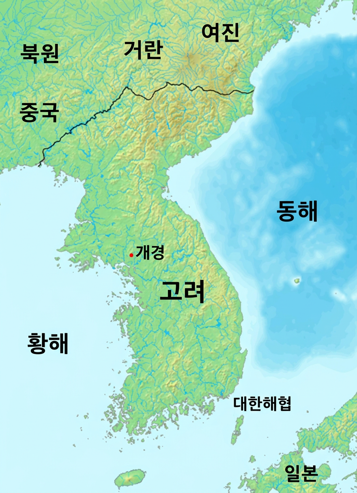
🗺 고려 건국 시기 한반도 (918~936년)
지금의 개성 근처에 송악이라는 곳이 있었어요. 이곳에는 대대로 바다 무역을 하며 큰 재산을 모은 호족 집안이 살고 있었는데, 바로 왕건의 집안이에요.
왕건의 할아버지 작제건은 서해 바다를 누비며 장사를 했고, 아버지 왕륭은 송악에서 가장 힘 있는 호족이었답니다. 왕건은 어릴 때부터 바다와 무역, 그리고 사람을 다루는 법을 자연스럽게 배우며 자랐어요.
그 무렵 신라는 이미 힘을 잃고 있었고, 전국 곳곳에서 호족들이 스스로 다스리는 세상이 되었어요. 이런 혼란 속에서 궁예라는 인물이 등장했답니다.
궁예는 신라 왕족 출신이라고 전해지지만, 불행한 어린 시절을 보낸 인물이에요. 궁예는 뛰어난 군사 능력으로 세력을 키워 태봉(후고구려)이라는 나라를 세웠어요. 왕건의 아버지 왕륭은 일찍이 궁예에게 귀순했고, 젊은 왕건은 궁예의 부하 장수가 되었답니다.
왕건은 궁예 밑에서 수많은 전투에 참여하며 공을 세웠어요. 특히 바다 전투에 능숙해서 서해안 지역을 차례로 정복했답니다. 나주를 비롯한 전라도 지역을 장악한 것도 왕건의 공이었어요.
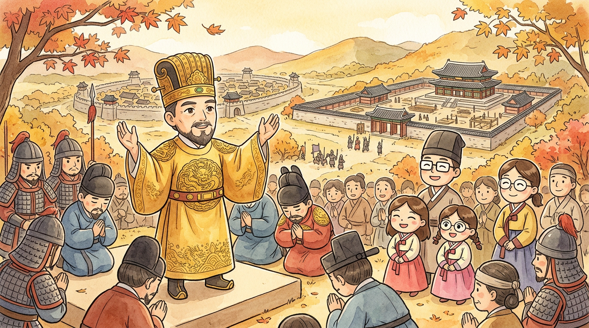
궁예의 부하에서 새 나라 고려를 세운 왕건
그런데 궁예는 점점 이상해져 갔어요. 관심법이라 하여 사람의 마음을 읽을 수 있다고 주장하며, 자기를 반대하는 사람들을 마구 죽이기 시작했답니다. 심지어 자기 아내와 아들까지 죽였어요!
신하들은 두려움에 떨었고, 백성들도 고통받았어요. 결국 918년, 홍유, 배현경, 신숭겸, 복지겸 등 네 명의 장수가 중심이 되어 왕건을 새 왕으로 추대했답니다.
호족(豪族): 지방에서 군사력과 경제력을 가지고 스스로 다스리던 힘 있는 집안. 신라 말기에 중앙 정부의 힘이 약해지면서 호족들이 크게 성장했어요.
관심법(觀心法): 사람의 마음을 들여다본다는 뜻. 궁예가 신하들을 의심하고 처벌하기 위해 사용한 방법이에요.
추대(推戴): 여러 사람이 합의하여 누군가를 높은 자리에 올리는 것.
왕건은 새 나라의 이름을 고려(高麗)라고 지었어요. 이것은 고구려를 계승하겠다는 뜻이었답니다. 수도는 자신의 고향인 송악(개경, 지금의 개성)으로 정했어요.
왕건은 궁예와는 완전히 다른 방식으로 나라를 다스렸어요. 힘으로 누르는 대신, 포용과 관용으로 사람들의 마음을 얻었답니다. 항복해 오는 적장에게도 벌을 주지 않고 오히려 높은 벼슬을 주었어요.
고려라는 이름에는 왕건의 큰 꿈이 담겨 있었어요. 고구려의 넓은 영토와 씩씩한 기상을 이어받아, 한반도를 다시 하나로 통일하겠다는 원대한 포부였답니다.
당시 한반도에는 세 나라가 있었어요. 왕건의 고려, 견훤의 후백제, 그리고 힘을 거의 잃은 신라. 이 세 나라가 다투는 시대를 후삼국시대라 불러요.
후백제의 견훤은 무서운 군사력을 가진 강력한 적이었어요. 927년, 견훤은 신라의 수도 경주를 급습하여 경애왕을 죽이는 끔찍한 일을 저질렀어요. 이 소식을 듣고 달려온 왕건은 공산(팔공산) 전투에서 견훤에게 크게 졌답니다. 이때 충신 신숭겸이 왕건의 갑옷을 입고 대신 죽어, 왕건을 살렸어요.
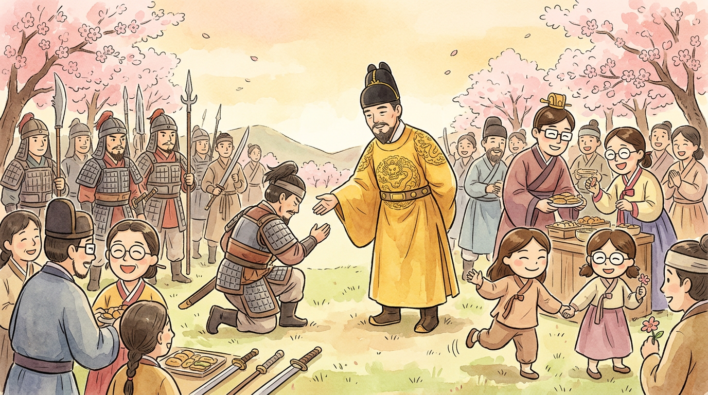
후삼국을 하나로 통일한 왕건의 여정
하지만 왕건은 포기하지 않았어요! 930년 고창(안동) 전투에서 후백제군을 크게 물리치며 전세를 역전시켰답니다. 이 승리 이후 많은 호족들이 고려 편으로 돌아섰어요.
935년, 신라의 마지막 왕 경순왕이 스스로 고려에 항복했어요. 왕건은 경순왕을 극진히 대접하고 높은 벼슬과 땅을 주었답니다.
한편, 후백제에서는 놀라운 일이 벌어졌어요. 견훤이 넷째 아들 금강에게 왕위를 물려주려 하자, 큰아들 신검이 반란을 일으켜 아버지를 절에 가두었어요! 분노한 견훤은 탈출하여 놀랍게도 적국인 고려의 왕건에게 찾아가 항복했답니다.
936년, 왕건은 후백제를 공격하여 신검의 항복을 받아냈어요. 마침내 후삼국 통일이 완성되었답니다!
견훤이 적국의 왕에게 찾아가 도움을 청한 것은 역사에서 매우 드문 일이에요. 그만큼 아들에게 배신당한 분노가 컸던 거예요. 왕건은 견훤을 따뜻하게 맞아주었는데, 이런 포용력이 바로 왕건이 후삼국을 통일할 수 있었던 비결이랍니다.
왕건은 세상을 떠나기 전, 후대 왕들이 반드시 지켜야 할 10가지 가르침을 남겼어요. 이것이 바로 훈요십조(訓要十條)예요.
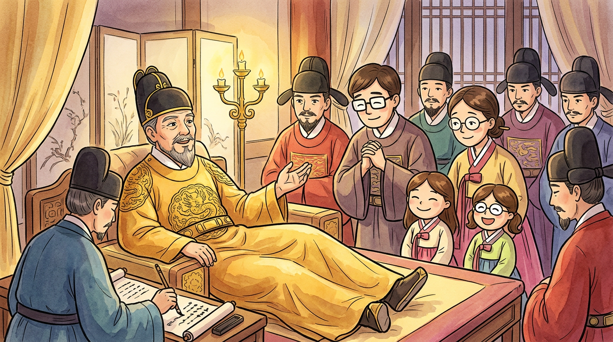
후대 왕들에게 훈요십조를 남기는 왕건
첫째, 나라의 큰 사업은 부처님의 도움에 힘입은 것이니, 사찰을 잘 보살펴라.
둘째, 풍수지리를 함부로 어기지 마라.
넷째, 거란은 짐승 같은 나라이니 거란의 풍속을 따르지 마라.
여섯째, 연등회와 팔관회를 잘 거행하라.
여덟째, 차현(차령산맥) 이남 사람에게는 높은 벼슬을 주지 마라. (이 조항은 논란이 많아요!)
훈요십조는 고려 역사 내내 중요한 정치적 기준이 되었어요. 특히 여덟째 조항은 후백제 지역(지금의 전라도)에 대한 차별로, 오랫동안 논란이 되었답니다. 하지만 일부 학자들은 이 조항이 나중에 누군가가 끼워 넣은 것이라고 주장하기도 해요.
왕건 앞에는 큰 숙제가 있었어요. 전국의 수많은 호족들을 어떻게 하나로 묶을 것인가? 왕건은 아주 독특한 방법을 사용했답니다.
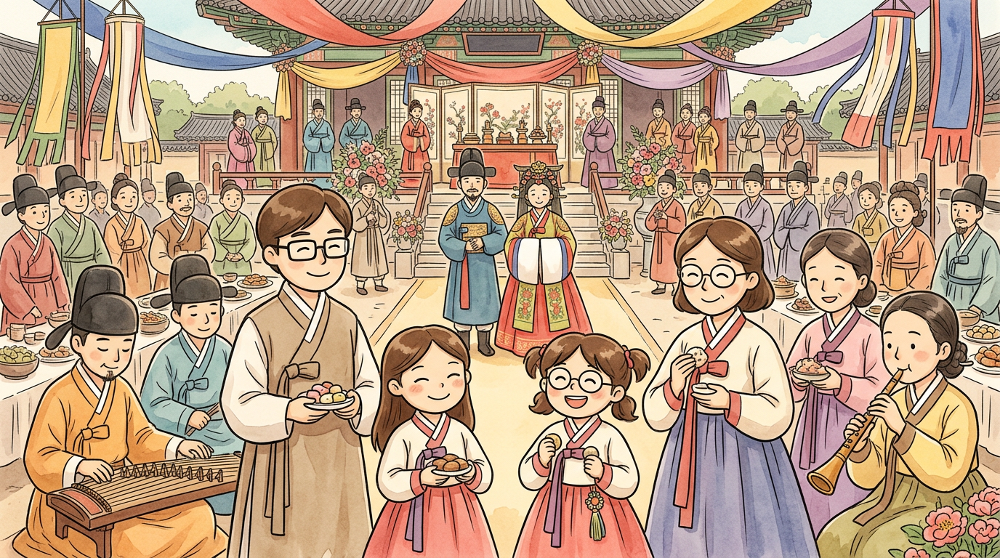
호족들과 결혼 동맹을 맺는 왕건
결혼 동맹(혼인 정책): 왕건은 전국 각지의 유력 호족 딸들과 결혼했어요. 왕건의 부인이 무려 29명이나 되었답니다! 이것은 사랑이 아니라 정치적 동맹이었어요. 호족의 딸이 왕비가 되면, 그 호족은 왕실의 친척이 되어 고려에 충성하게 되니까요.
사성정책(賜姓政策): 귀순해 온 호족들에게 왕씨 성을 내려주었어요. 왕의 성을 받는다는 것은 큰 영광이었고, 왕실의 가족이 되었다는 뜻이었답니다.
기인제도: 호족의 자제를 수도 개경에 머물게 하는 제도예요. 겉으로는 교육이지만, 사실은 호족이 반란을 일으키지 못하게 하는 인질 역할도 했답니다.
이렇게 왕건은 무력이 아닌 지혜와 포용으로 후삼국을 통일하고, 강력한 고려를 만들어 갔어요.
왕건은 적의 장수가 항복해 오면 벌을 주지 않고 오히려 대접해 주었어요. 이런 방식이 무력으로 누르는 것보다 나라를 통일하는 데 왜 더 효과적이었을까요?
왕건은 적의 장수가 항복하면 벌을 주지 않고 높은 벼슬을 주었어요. 이런 방법과 힘으로 누르는 방법 중 어떤 것이 나라를 오래 유지하는 데 더 좋을까요? 그 이유는?
벌을 주지 않고 대접하는 방법이 나라를 오래 유지하는 데 더 좋아요. 힘으로 누르면 당장은 복종하지만 마음속에 원한이 쌓여서 기회가 오면 반란을 일으키거든요. 반면에 잘 대접해 주면 진심으로 감사하며 충성하게 되어요. 왕건이 후삼국을 통일할 수 있었던 비결이 바로 이 포용의 리더십이었답니다.
훈요십조의 여덟째 조항은 특정 지역 사람을 차별하는 내용이에요. 이런 차별이 왜 문제가 될까요? 오늘날에도 비슷한 문제가 있을까요?
특정 지역 사람을 차별하면 그 지역 사람들이 억울하고 화가 나서 나라가 하나로 단결하기 어려워져요. 능력 있는 사람도 기회를 얻지 못하니 나라 전체에도 손해예요. 오늘날에도 출신 지역, 성별, 외모 등으로 사람을 판단하는 편견이 있는데, 사람은 누구나 동등한 기회를 가져야 한다는 것을 기억해야 해요.
궁예는 처음에 좋은 지도자였지만 나중에 폭군이 되었어요. 권력을 가진 사람이 변하지 않으려면 어떤 것이 필요할까요?
주변에서 잘못을 지적해 줄 수 있는 사람이 있어야 해요. 궁예는 자기를 비판하는 사람을 모두 죽였기 때문에, 아무도 잘못을 말해줄 수 없었어요. 또한 자기 자신을 돌아보는 겸손함과, 규칙과 법으로 권력을 제한하는 제도가 필요해요. 오늘날 민주주의에서 삼권분립이 있는 이유가 바로 이것이랍니다.
왕건이 세상을 떠난 뒤, 고려는 불안한 시기를 맞이했어요. 왕건에게는 부인이 29명, 아들이 25명이나 있었거든요! 왕위를 둘러싼 다툼이 시작되었고, 호족들은 자기 딸이 낳은 왕자를 왕으로 만들려고 서로 싸웠답니다.
2대 왕 혜종은 왕위에 오른 지 2년 만에 세상을 떠났고, 3대 왕 정종도 재위 4년 만에 동생에게 왕위를 넘겼어요. 호족들의 힘이 왕보다 더 강했기 때문이에요.
이런 혼란 속에서 4대 왕으로 즉위한 사람이 바로 광종이에요. 광종은 고려 역사를 완전히 바꾸어 놓을 대개혁을 준비하고 있었답니다.
광종은 왕위에 오른 뒤 무려 7년 동안 아무 일도 하지 않는 것처럼 보였어요. 호족들은 "이 왕은 만만하군" 하고 방심했답니다.
하지만 광종은 조용히 준비하고 있었어요! 누가 적이고 누가 아군인지 살피고, 개혁의 계획을 하나하나 세우고 있었던 거예요. 마치 사냥감을 노리는 호랑이처럼 때를 기다린 거랍니다.
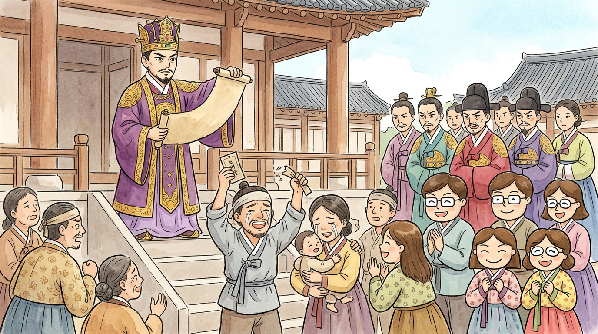
강력한 개혁을 추진하는 광종
956년, 광종이 드디어 첫 번째 개혁의 칼을 뽑았어요. 바로 노비안검법(奴婢按檢法)이에요.
후삼국시대의 혼란 속에서 원래 양인(평민)이었던 사람들이 억울하게 노비가 된 경우가 아주 많았어요. 전쟁에서 잡혀오거나, 빚을 갚지 못해 노비가 되거나, 힘센 호족에게 강제로 노비가 된 사람들이었답니다.
광종은 이런 억울한 노비들을 조사하여 다시 양인(자유민)으로 풀어주었어요. 이것이 노비안검법이에요.
노비안검법의 진짜 목적은 무엇이었을까요? 물론 억울한 사람을 구하는 것도 있었지만, 더 중요한 이유가 있었어요. 호족들은 노비가 많을수록 힘이 강해졌거든요. 노비를 빼앗기면 호족의 힘이 약해지고, 새로 양인이 된 사람들은 왕에게 세금을 내고 군대에 가게 되니 왕의 힘은 강해지는 거예요. 한 가지 정책으로 두 마리 토끼를 잡은 셈이에요!
958년, 광종은 두 번째 폭탄을 터뜨렸어요. 중국에서 온 쌍기라는 학자의 건의를 받아들여 과거제(科擧制)를 도입한 거예요.
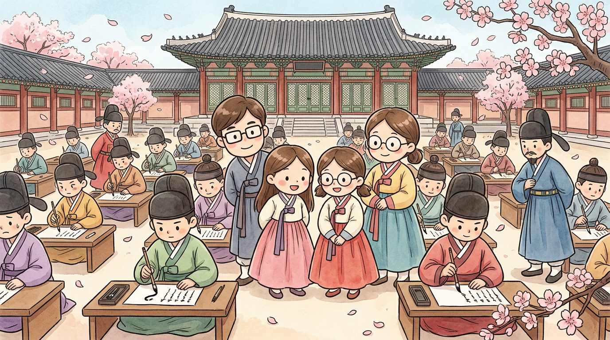
과거 시험을 보는 고려 선비들
과거제 이전에는 관리가 되려면 호족이나 귀족 집안 출신이어야 했어요. 아무리 머리가 좋고 능력이 뛰어나도, 집안이 좋지 않으면 높은 벼슬에 오를 수 없었답니다.
과거제는 이것을 완전히 뒤집었어요! 시험을 통해 실력으로 관리를 뽑으니, 집안이 아무리 보잘것없어도 공부만 잘하면 높은 관리가 될 수 있었어요. 호족들은 더 이상 혈통만으로 권력을 유지할 수 없게 된 거예요.
노비안검법(奴婢按檢法): 억울하게 노비가 된 사람을 조사(按檢)하여 양인으로 풀어주는 법.
과거제(科擧制): 시험(科擧)을 통해 관리를 뽑는 제도. 중국 수나라에서 시작되어 고려에 도입되었어요.
양인(良人): 자유로운 신분의 평민. 세금을 내고 군대에 갈 의무가 있지만, 자유롭게 살 수 있었어요.
광종은 여기서 멈추지 않았어요. 왕의 위엄을 높이기 위해 황제를 칭하고, 수도 개경을 황도(皇都)라 불렀어요. 또한 광덕, 준풍 등 독자적인 연호를 사용했답니다.
광종은 자기를 반대하는 호족과 귀족들을 가차 없이 숙청했어요. 이 과정에서 많은 피가 흘렀고, 심지어 함께 고려를 세운 개국 공신의 후손들까지 처벌받았답니다.
광종의 개혁은 성공적이었지만, 너무 많은 사람을 죽인 것은 비극이었어요. 역사학자들은 광종을 "고려를 진정한 나라로 만든 위대한 왕"이면서 동시에 "피의 숙청자"라고 평가한답니다.
광종은 나라를 바꾸기 위해 많은 사람을 희생시켰어요. '좋은 목적을 위해서라면 나쁜 방법을 써도 괜찮을까?' 여러분의 생각은 어떤가요?
광종이 왕권을 강화한 뒤, 고려는 나라의 기본 틀을 만들어야 했어요. 이 과제를 훌륭하게 완수한 것이 6대 왕 성종과 신하 최승로예요.
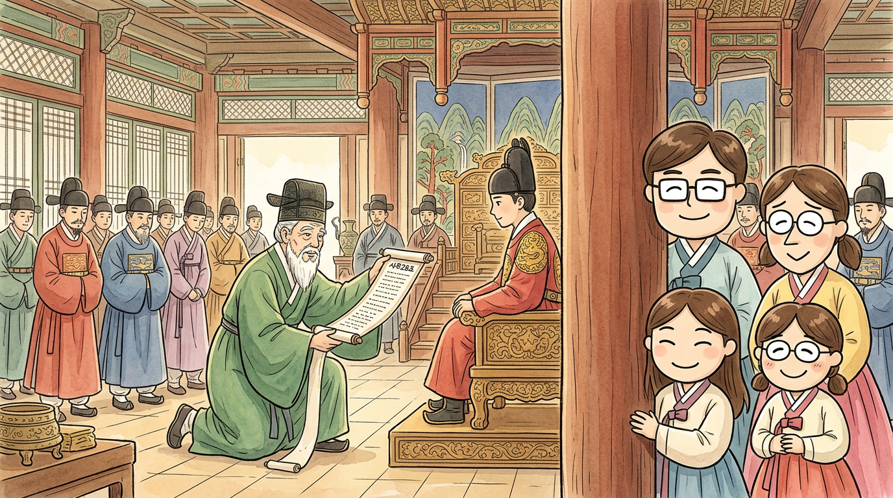
시무28조를 올리는 최승로와 이를 받아들이는 성종
최승로는 성종에게 시무28조(時務二十八條)라는 긴 보고서를 올렸어요. "지금 시대에 필요한 28가지 일"이라는 뜻이에요. 그 핵심 내용은 이러했답니다.
유교적 통치: 임금은 덕으로 백성을 다스려야 합니다.
불교 제한: 절이 너무 많아졌으니 새로 짓지 말고, 승려 수도 줄여야 합니다.
지방 관리 파견: 호족이 아닌 중앙에서 보낸 관리가 지방을 다스려야 합니다.
검소한 생활: 사치를 금하고 백성의 어려움을 살펴야 합니다.
성종은 최승로의 건의를 대부분 받아들여 유교적 정치체제를 확립했어요. 전국에 12목을 설치하여 중앙에서 관리를 파견하고, 국자감이라는 교육기관을 세워 유교 교육을 강화했답니다.
이로써 고려는 왕건의 건국(918) → 광종의 왕권 강화(956~) → 성종의 제도 정비(982~)를 거쳐, 비로소 안정된 나라의 모습을 갖추게 되었어요.
고려의 과거제는 조선시대까지 약 900년 동안 이어졌어요! 과거에 합격하면 온 마을이 축제를 벌였고, 합격자의 이름은 방(榜)에 붙여 모두에게 알렸답니다. 요즘으로 치면 수능 만점자가 뉴스에 나오는 것과 비슷해요!
광종은 7년이나 참으며 때를 기다렸어요. 무언가를 이루고 싶을 때 '준비하고 기다리는 것'이 왜 중요할까요? 여러분의 경험에서 예를 들어 설명해 보세요.
준비 없이 서두르면 실패할 확률이 높아요. 광종이 왕이 되자마자 호족을 공격했다면, 힘이 센 호족들이 연합하여 광종을 쫓아냈을 거예요. 7년 동안 충분히 준비했기에 성공할 수 있었어요. 시험 공부도 마찬가지예요. 매일 조금씩 꾸준히 준비하면 좋은 결과를 얻을 수 있지만, 시험 전날 벼락치기를 하면 좋은 성적을 받기 어렵답니다.
과거제 이전에는 집안이 좋아야 관리가 될 수 있었고, 과거제 이후에는 실력으로 관리가 되었어요. 어떤 방법이 더 공정할까요? 오늘날의 입시제도와 비교해 볼까요?
실력으로 뽑는 과거제가 더 공정해요. 집안 배경으로 뽑으면 능력 없는 사람이 중요한 자리에 앉게 되고, 뛰어난 인재가 기회를 잃게 되거든요. 하지만 과거제도 부자 집 아이가 더 좋은 교육을 받을 수 있어서 완벽하게 공정한 것은 아니었어요. 오늘날에도 '모든 사람에게 공정한 기회를 주려면 어떻게 해야 할까?'는 중요한 질문이랍니다.
광종의 개혁은 나라를 위해서는 좋았지만, 많은 사람이 억울하게 죽기도 했어요. '좋은 결과를 위해 나쁜 방법을 써도 될까?'에 대해 자기 생각을 말해보세요.
이것은 정답이 없는 어려운 질문이에요. 한쪽에서는 '나라를 바로잡기 위해 어쩔 수 없었다'고 하고, 다른 쪽에서는 '아무리 좋은 목적이라도 무고한 사람을 죽이는 것은 옳지 않다'고 해요. 중요한 것은, 좋은 목적을 이루되 가능한 한 피해를 줄이는 방법을 찾는 것이에요. 대화와 설득으로 해결할 수 있다면 그것이 가장 좋은 방법이랍니다.
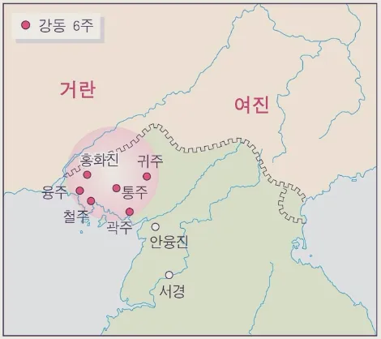
🗺 거란 침입과 강동 6주 (993~1019년)
고려가 나라의 기틀을 잡아가고 있을 무렵, 북쪽에서 무서운 적이 다가오고 있었어요. 바로 거란(요나라)이에요.
거란은 만주와 몽골 초원에서 일어난 유목 민족으로, 말을 타고 싸우는 데 아주 뛰어났어요. 거란은 926년에 발해를 멸망시키고, 중국 북부까지 차지한 강력한 나라였답니다.
거란의 눈에 고려는 탐나는 먹잇감이었어요. 게다가 고려가 중국의 송나라와 친하게 지내는 것이 마음에 들지 않았답니다. 거란은 고려를 자기편으로 만들거나, 아니면 무력으로 굴복시키려 했어요.
993년, 거란의 장수 소손녕이 80만 대군을 이끌고 고려를 침략했어요. (실제로는 그보다 적었겠지만, 그래도 엄청난 군대였어요!)
고려 조정은 공포에 빠졌어요. 많은 신하들이 "항복하자", "서경(평양) 이북의 땅을 거란에 주자"고 했답니다. 이때 한 신하가 당당하게 일어섰어요.
"제가 가서 담판을 짓겠습니다!"
바로 서희(徐熙)예요.
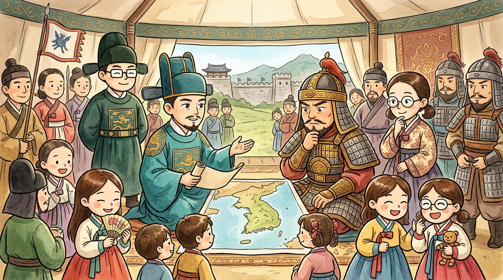
거란 장수 소손녕과 당당하게 담판을 벌이는 서희
서희는 거란 진영으로 들어가 소손녕과 마주 앉았어요. 소손녕이 큰소리쳤어요.
"너희 고려는 고구려 땅에서 일어났으면서 왜 고구려 땅(만주)을 차지하지 않고, 우리 거란 땅인 신라 지역을 차지하고 있느냐? 게다가 우리 거란을 무시하고 바다 건너 송나라와 친하게 지내니, 이것이 우리가 쳐들어온 이유다!"
서희는 조금도 주눅 들지 않고 대답했어요.
"우리 고려가 바로 고구려를 이어받은 나라요! 그래서 나라 이름도 고려라 하고, 수도도 평양에 두었소. 영토로 따지면 오히려 거란이 우리 고구려 땅을 차지하고 있는 것이오! 그리고 우리가 거란과 교류하지 못하는 것은 그 사이에 여진족이 막고 있기 때문이오. 여진을 물리치고 옛 고구려 땅을 돌려주면, 우리가 거란과 교류하겠소."
서희의 논리는 정말 대단했어요! 상대의 주장을 그대로 뒤집어서, 오히려 "거란이 고려 땅을 돌려줘야 한다"고 주장한 거예요. 소손녕은 서희의 논리에 할 말을 잃었답니다.
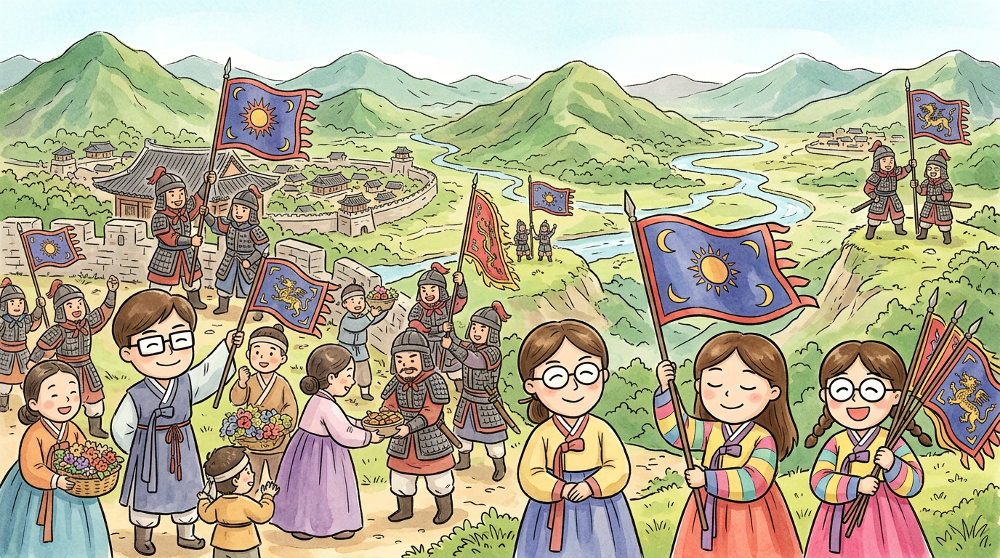
서희가 외교로 얻어낸 강동 6주의 위치
결국 거란은 군대를 물렸고, 놀랍게도 고려는 전쟁 한 번 제대로 하지 않고 강동 6주라는 넓은 땅을 얻었어요! 말 한마디로 전쟁을 이긴 거예요. 서희의 외교담판은 한국 역사상 가장 뛰어난 외교 성과 중 하나로 꼽힌답니다.
외교담판: 나라와 나라 사이에 중요한 문제를 놓고 직접 만나 이야기하여 해결하는 것.
강동 6주: 압록강 동쪽의 6개 지역. 서희가 외교로 얻어낸 중요한 영토예요.
거란은 강동 6주를 빼앗긴 것이 억울했어요. 1010년, 거란의 황제 성종이 직접 40만 대군을 이끌고 다시 쳐들어왔답니다!
이번에는 외교로 해결할 수 없었어요. 거란군의 기세가 너무 강해서 고려의 수도 개경이 함락되었고, 고려 왕 현종은 남쪽 나주까지 피난을 갔어요.
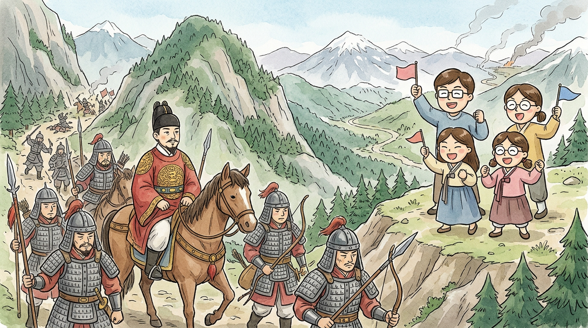
거란 2차 침입 - 현종의 나주 피난길
개경이 불타고 왕이 도망갔으니, 고려는 끝난 것처럼 보였어요. 하지만 고려 백성과 군인들은 포기하지 않았답니다!
특히 장군 양규는 거란군의 후방을 공격하여 큰 전과를 올렸어요. 양규는 적은 군사로 거란의 보급로를 끊고, 거란에 끌려가던 고려 백성 수천 명을 구출했답니다. 양규는 싸우다 끝내 전사했지만, 그의 활약 덕분에 거란군은 식량이 떨어져 결국 물러갔어요.
양규 장군은 적은 군사로 거란군의 후방을 7번이나 공격하여 승리했어요. 거란에 끌려가던 고려 백성 3만여 명을 구출한 영웅이에요. 안타깝게도 마지막 전투에서 전사했지만, 양규가 없었다면 거란 2차 침입의 피해는 훨씬 더 컸을 거예요.
거란은 포기하지 않았어요. 1018년, 소배압이 이끄는 10만 대군이 세 번째로 고려를 침략했어요.
이번에 고려군을 이끈 사람은 강감찬이에요. 강감찬은 과거에 장원급제한 문관 출신이었어요. 작고 마른 체구에 눈에 띄지 않는 외모였지만, 머리가 비상하게 뛰어난 사람이었답니다.
강감찬에게는 유명한 일화가 있어요. 그가 태어날 때 하늘에서 큰 별이 떨어졌다고 해요. 훗날 송나라 사신이 고려에 왔을 때, 개경 하늘에 큰 별이 보이지 않자 "고려에 큰 인물이 있구나!" 했다는 전설이 있답니다.
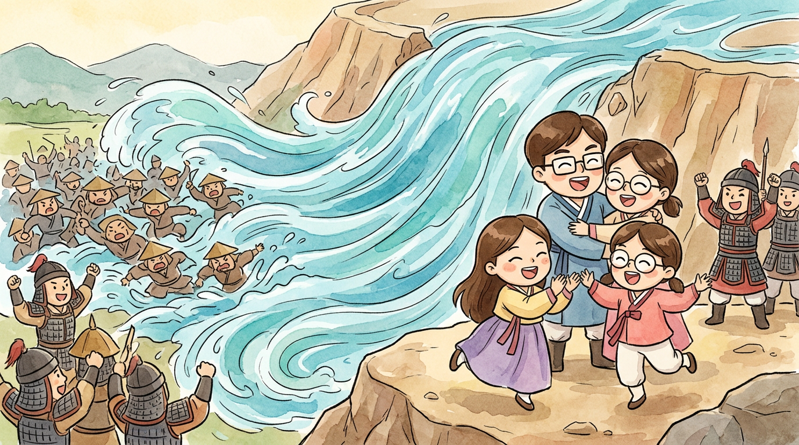
흥화진에서 수공(물 공격)을 펼치는 강감찬
강감찬은 먼저 흥화진에서 기막힌 작전을 펼쳤어요. 강물을 가죽 주머니와 나무로 만든 둑으로 막아두었다가, 거란군이 강을 건너는 순간 둑을 무너뜨려 물을 쏟아부은 거예요! 이것이 유명한 수공(水攻) 전술이에요.
갑자기 쏟아진 물에 거란군은 큰 피해를 입었어요. 하지만 소배압은 남은 군대를 이끌고 개경을 향해 진격했어요.
강감찬은 거란군이 개경에 가까워지도록 일부러 내버려 두었어요. 왜냐고요? 거란군이 깊숙이 들어올수록 보급로가 길어져 불리해지니까요!
결국 개경 근처에서 고려군의 저항에 막힌 거란군은 지치고 배고파 물러나기 시작했어요. 강감찬은 이때를 놓치지 않았답니다!
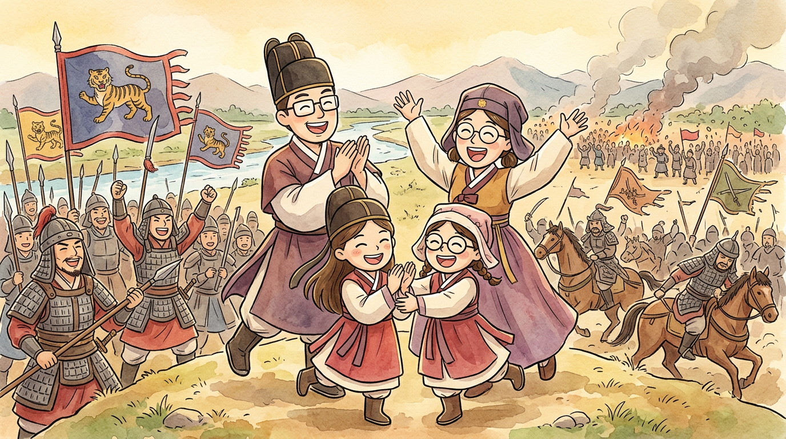
귀주대첩에서 거란군을 대파하는 고려군
1019년, 귀주(龜州)에서 퇴각하는 거란군을 기다리고 있던 강감찬의 고려군이 총공격을 감행했어요! 이것이 바로 귀주대첩(龜州大捷)이에요.
결과는 고려의 대승리! 10만 거란군 중에서 살아 돌아간 병사가 겨우 수천 명에 불과했다고 해요. 거란군의 거의 전부가 전멸한 거예요!
귀주대첩 이후 거란은 다시는 고려를 침략하지 않았어요. 오히려 고려와 평화 관계를 맺고 무역까지 했답니다. 강감찬은 개경으로 돌아올 때, 현종이 직접 마중을 나올 만큼 영웅 대접을 받았어요.
거란과의 전쟁이 끝난 후, 고려는 다시는 이런 일을 당하지 않기 위해 천리장성을 쌓았어요. 압록강 입구부터 동해안까지 약 천 리(약 400km)에 달하는 긴 성벽이에요.
천리장성은 1033년에 시작하여 1044년에 완성되었어요. 12년이나 걸린 대공사였답니다! 이 성벽 덕분에 고려는 북방 민족의 침입을 효과적으로 막을 수 있었어요.
서희는 말(외교)로 전쟁을 이겼고, 강감찬은 지혜로운 전략으로 전쟁을 이겼어요. 전쟁을 해결하는 방법에는 여러 가지가 있다는 것을 알 수 있어요. 여러분은 어떤 방법이 가장 좋다고 생각하나요?
서희는 칼이 아니라 말로 전쟁을 이겼어요. 친구들과 다툴 때도 주먹 대신 대화로 해결할 수 있을까요? 대화로 문제를 해결했던 경험을 떠올려 보세요.
대화로 문제를 해결하면 서로 상처를 주지 않으면서도 좋은 결과를 얻을 수 있어요. 서희는 상대방의 말을 잘 듣고 논리적으로 반박하여 전쟁 없이 오히려 땅까지 얻었어요. 친구와 다툴 때도 먼저 상대방의 이야기를 듣고, 내 생각을 차분하게 말하면 싸우지 않고도 문제를 해결할 수 있답니다. 물론 대화가 안 될 때도 있지만, 먼저 시도해보는 것이 중요해요.
강감찬은 작고 마른 문관이었지만 역사에 남는 대승을 거두었어요. 겉모습과 실제 능력은 왜 다를 수 있을까요?
사람의 진짜 능력은 겉모습이 아니라 머릿속에 있어요. 강감찬은 몸이 작고 약했지만 뛰어난 지략으로 10만 대군을 물리쳤어요. 축구에서도 키가 작은 메시가 세계 최고의 선수가 된 것처럼, 중요한 것은 외모가 아니라 지식, 노력, 지혜랍니다. 겉모습으로 사람을 판단하면 큰 실수를 할 수 있어요.
고려는 세 번이나 거란의 침입을 받았어요. 한 번 이겼다고 안심하면 안 되는 이유는 무엇일까요? 평화를 지키기 위해 무엇이 필요할까요?
한 번 이겼다고 방심하면 더 큰 위기가 올 수 있어요. 거란은 1차에서 졌지만 포기하지 않고 2차, 3차로 다시 쳐들어왔어요. 고려도 3차 침입 후에 천리장성을 쌓아 미리 대비했답니다. 평화를 지키려면 항상 준비하고, 외교로 좋은 관계를 유지하면서도, 만일의 사태에 대비하는 힘을 키워야 해요.
거란을 물리친 뒤 고려는 평화의 시대를 맞이했어요. 하지만 평화가 길어지자 새로운 문제가 생겼답니다. 바로 문벌귀족들의 횡포예요.
문벌귀족이란 과거제를 통해 대대로 높은 관직을 차지하며 거대한 권력을 쥔 집안들이에요. 이들은 서로 결혼하며 세력을 키웠고, 나중에는 왕보다 더 강한 힘을 가지게 되었답니다.
문벌귀족 중에서 가장 강력했던 사람이 이자겸이에요. 이자겸의 집안은 대대로 왕비를 배출한 명문가였어요. 이자겸은 자기 두 딸을 모두 인종에게 시집보냈어요. 왕의 장인이 된 이자겸의 권력은 하늘을 찔렀답니다.
이자겸은 "내가 왕이 되어도 되겠다"는 야심까지 품었어요. 인종이 이자겸을 제거하려 하자, 이자겸은 오히려 반란을 일으켜 궁궐을 불태우고 왕을 가두었어요! 결국 이자겸은 다른 신하들의 도움으로 제거되었지만, 이 사건으로 왕실의 권위는 크게 떨어졌답니다.
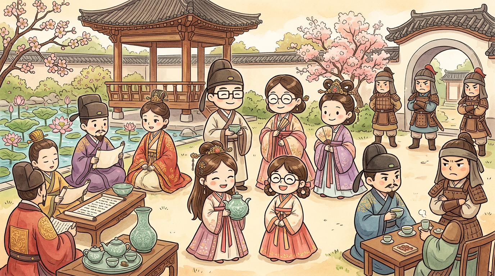
화려한 생활을 하는 문벌귀족들과 차별받는 무신들
승려 묘청은 풍수지리를 내세워 수도를 개경에서 서경(평양)으로 옮기자고 주장했어요. 또한 금나라를 공격하자며 북벌론을 펼쳤답니다.
묘청의 주장에는 사실 깊은 뜻이 있었어요. 개경의 문벌귀족들의 힘을 꺾고, 고구려의 기상을 되살리자는 것이었죠. 하지만 개경의 귀족들이 반대하자, 묘청은 서경에서 반란을 일으켰어요.
개경에서 파견된 김부식의 군대에 의해 묘청의 난은 진압되었어요. 역사학자 신채호는 훗날 이 사건을 "조선 역사 1천 년 이래 제일 큰 사건"이라고 평가했답니다. 자주적이고 진취적인 세력이 사대적인 세력에 패배한 사건이라는 거예요.
문벌귀족(門閥貴族): 대대로 높은 관직을 차지하며 권력과 재산을 가진 명문 집안.
무신(武臣): 군사 업무를 담당하는 관리. 문신(文臣)은 행정과 학문을 담당하는 관리예요.
북벌론: 북쪽의 적(금나라 등)을 공격하여 옛 고구려 땅을 되찾자는 주장.
고려 사회에는 심각한 차별이 있었어요. 문관(문신)은 높은 대접을 받는 반면, 무관(무신)은 심한 멸시를 당했답니다.
같은 등급의 관직이어도 문관이 무관보다 훨씬 높은 대우를 받았어요. 문관들은 무관을 하인처럼 부리기까지 했답니다. 어느 날, 젊은 문관 한뢰가 노장 무관 이소응의 뺨을 때리는 사건까지 벌어졌어요!
1170년, 의종이 보현원이라는 곳에 놀러 갔을 때, 참다 참다 폭발한 무관들이 마침내 반란을 일으켰어요! 정중부, 이의방, 이고 등이 이끄는 무관들은 함께 온 문관들을 닥치는 대로 죽이고, 왕 의종까지 폐위시켰답니다.
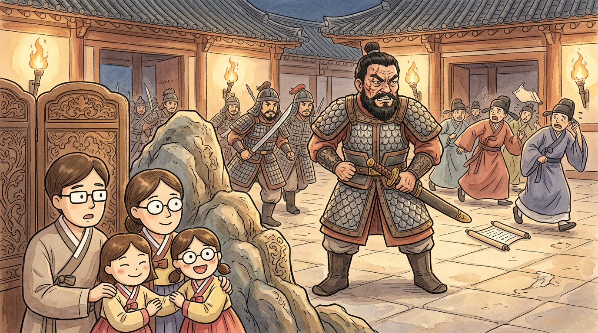
보현원에서 무신정변을 일으킨 정중부와 무관들
이것이 바로 무신정변이에요. 이 사건으로 100년 넘게 이어질 무신정권 시대가 시작되었답니다.
무신정변은 단순히 군인들의 반란이 아니었어요. 오랫동안 쌓인 불공정한 차별에 대한 분노의 폭발이었답니다. 문관들이 무관을 존중했더라면, 이런 비극은 일어나지 않았을 거예요. 차별이 얼마나 위험한 결과를 가져오는지 보여주는 역사적 사건이에요.
무신정변 이후 무신들 사이에서도 권력 다툼이 계속되었어요. 정중부, 경대승, 이의민 등이 차례로 권력을 잡았다가 죽임을 당했답니다.
1196년, 최충헌이 이의민을 제거하고 권력을 잡았어요. 최충헌은 이전 무신들과 달리 체계적으로 정권을 운영했답니다.
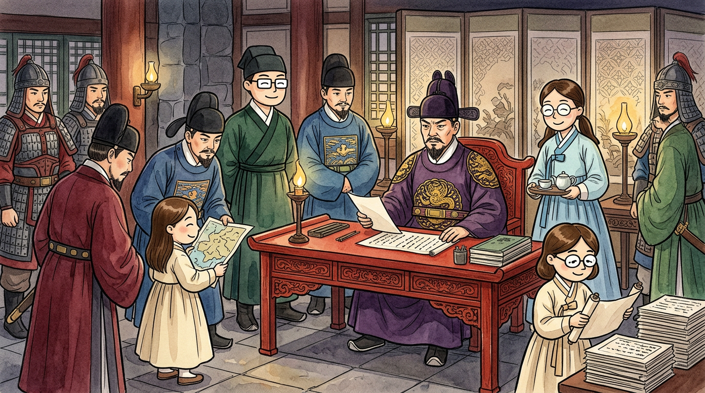
교정별감부에서 나라를 다스리는 최충헌
최충헌은 교정별감이라는 기관을 만들어 국정을 총괄했어요. 왕은 있었지만 사실상 허수아비였고, 진짜 권력은 최충헌에게 있었답니다. 최충헌은 자기 마음에 안 드는 왕을 갈아치우기도 했어요!
최충헌의 권력은 아들 최우(최이), 손자 최항, 증손자 최의까지 4대 약 60년 동안 이어졌어요. 마치 왕조 안에 또 다른 왕조가 있는 것 같았답니다.
최충헌은 봉사10조(封事十條)를 올려 나라를 개혁하겠다고 했지만, 사실 자기 권력을 유지하는 데 더 관심이 많았어요. 하지만 최씨 정권 시기에 팔만대장경이 만들어지고, 몽골 침입에 맞서 싸우는 등 중요한 역사적 사건들이 벌어졌답니다.
무신정변은 신분 사회에 큰 균열을 가져왔어요. "무관도 문관을 이길 수 있다"는 것을 보여주자, 가장 낮은 신분인 노비들까지 "우리도 세상을 바꿀 수 있다!"고 생각하기 시작한 거예요.
1198년, 최충헌의 집에서 일하는 노비 만적이 다른 노비들을 모아 놓고 이렇게 외쳤어요.
"장군과 재상(왕후장상)의 씨가 따로 있겠느냐! 때가 오면 누구나 할 수 있는 것이다!"
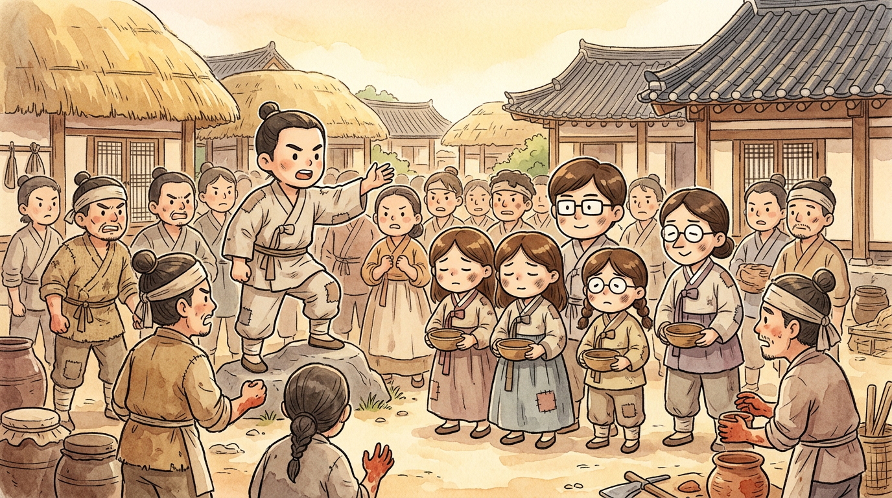
노비들에게 봉기를 호소하는 만적
만적은 노비들의 신분 해방을 위한 봉기를 계획했어요. 하지만 안타깝게도 거사 직전에 밀고자가 나타나 계획이 발각되었고, 만적과 동료들은 잡혀서 처형당했답니다.
만적의 난은 비록 실패했지만, "태어날 때부터 정해진 신분은 없다"는 생각이 이미 사람들 사이에 퍼지고 있었다는 것을 보여줘요. 이것은 한국 역사에서 매우 중요한 의미를 가진 사건이랍니다.
"왕후장상의 씨가 따로 있느냐"라는 말은 원래 중국 진나라 말기에 농민 반란을 일으킨 진승이 한 말이에요. 동양 역사에서 신분 해방의 상징적인 문장이랍니다. 만적이 이 말을 했다는 것은 노비들도 역사 지식을 가지고 있었다는 뜻이에요!
무신정변은 오랜 차별 때문에 일어났어요. 학교에서도 누군가를 무시하거나 차별하면 어떤 일이 생길 수 있을까요?
누군가를 계속 차별하고 무시하면, 그 사람의 마음에 분노와 상처가 쌓여요. 참고 참다가 어느 순간 크게 폭발할 수 있어요. 무신정변처럼요. 학교에서도 친구를 무시하면 그 친구가 마음의 병을 얻거나, 폭력으로 이어질 수 있어요. 모든 사람을 똑같이 존중하는 것이 평화로운 관계를 유지하는 비결이랍니다.
만적은 '신분은 태어날 때 정해지는 것이 아니다'라고 했어요. 오늘날에도 태어날 때부터 불공평한 것들이 있을까요? 그것을 어떻게 바꿀 수 있을까요?
오늘날에도 부모의 재산, 사는 지역, 나라에 따라 받을 수 있는 교육과 기회가 달라요. 어떤 아이는 좋은 학교에 다니고 다양한 경험을 하지만, 어떤 아이는 그런 기회가 없어요. 이런 불평등을 줄이기 위해 장학금 제도, 무상교육, 복지 정책 등이 있지만, 아직 부족한 부분이 많아요. 모든 사람이 공정한 기회를 가질 수 있도록 관심을 가지는 것이 중요해요.
최충헌은 왕을 마음대로 바꿀 정도의 권력을 가졌어요. 한 사람이 너무 큰 권력을 가지면 왜 위험할까요?
한 사람에게 권력이 집중되면 누구도 그 사람의 잘못을 막을 수 없어요. 최충헌은 왕을 갈아치울 만큼 강했기 때문에, 아무도 그의 잘못을 지적하지 못했어요. 오늘날 민주주의에서는 대통령, 국회, 법원이 서로의 힘을 견제하는 삼권분립 제도가 있어요. 이것은 한 사람이나 한 기관에 너무 큰 힘이 쏠리는 것을 막기 위한 지혜로운 장치랍니다.
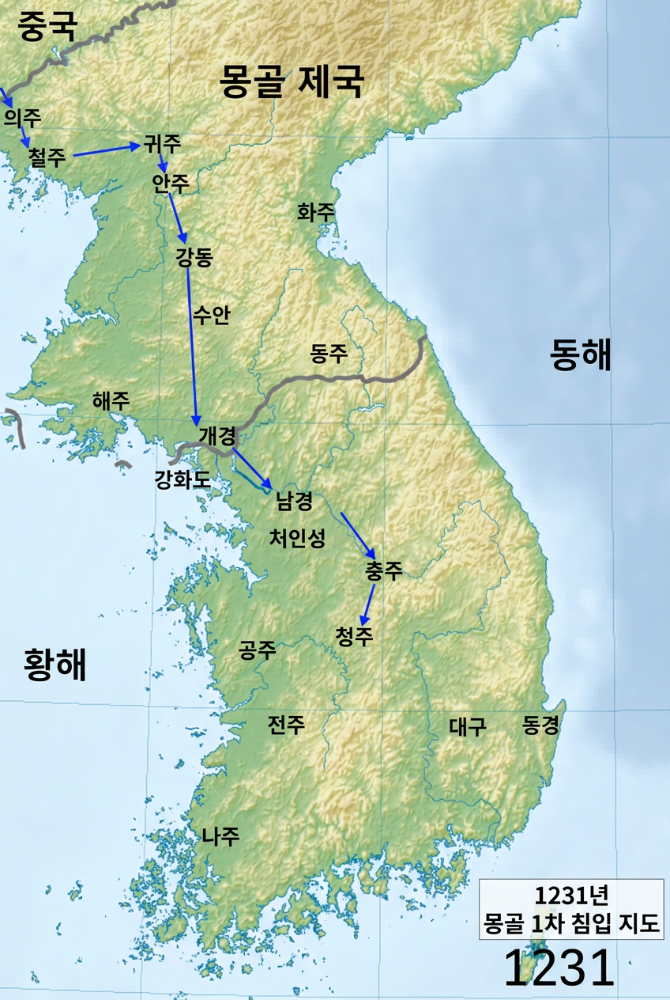
🗺 몽골의 고려 침입 경로 (1231년)
13세기, 세계 역사상 가장 거대한 제국이 등장했어요. 바로 몽골 제국이에요. 칭기즈 칸이 이끄는 몽골군은 유럽부터 아시아까지 세계를 휩쓸었답니다.
몽골군은 말을 타고 번개처럼 빠르게 움직이며, 만나는 나라를 차례로 무너뜨렸어요. 중국의 금나라, 서역의 호라즘 제국, 멀리 러시아와 헝가리까지 몽골의 말발굽 아래 무릎을 꿇었답니다.
이 무시무시한 몽골의 칼끝이 고려를 향했어요.
처음에 고려와 몽골은 나쁜 사이가 아니었어요. 거란의 잔여 세력이 고려를 침략했을 때, 몽골이 도와준 적도 있었답니다. 하지만 몽골이 과도한 공물(조공)을 요구하고, 고려에 보낸 사신이 돌아가는 길에 죽는 사건이 벌어지면서 관계가 악화되었어요.
1231년, 몽골 장수 살리타가 대군을 이끌고 고려를 침략했어요. 이것이 1차 침입이에요. 그 뒤로 약 30년 동안 무려 6차례나 침입이 계속되었답니다.
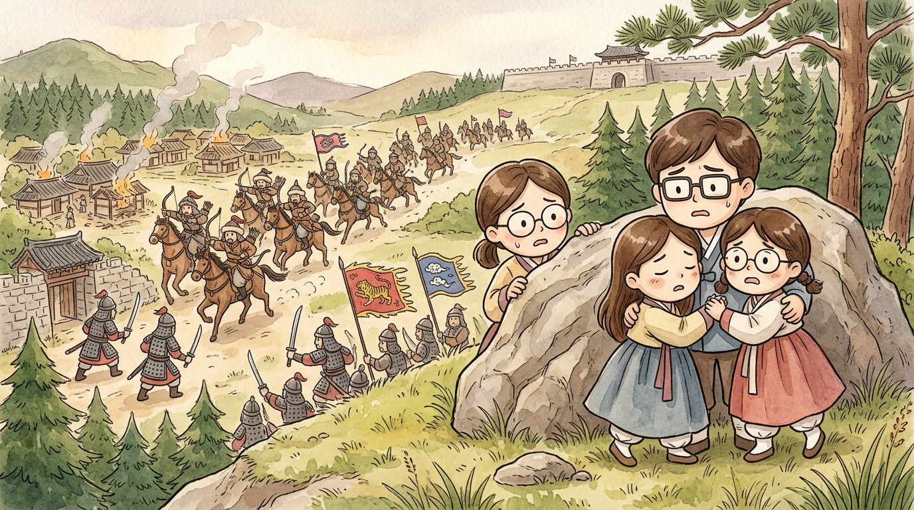
고려를 침략하는 몽골 기마군단
몽골군은 정말 잔인했어요. 지나가는 곳마다 마을을 불태우고, 백성들을 죽이거나 끌고 갔어요. 고려의 아름다운 문화재들도 수없이 파괴되었답니다. 초조대장경(고려 최초의 대장경)과 황룡사 9층 목탑도 이때 불타 없어졌어요.
최씨 무신정권의 수장 최우는 대담한 결정을 내렸어요. 수도를 개경에서 강화도로 옮긴 거예요! (1232년)
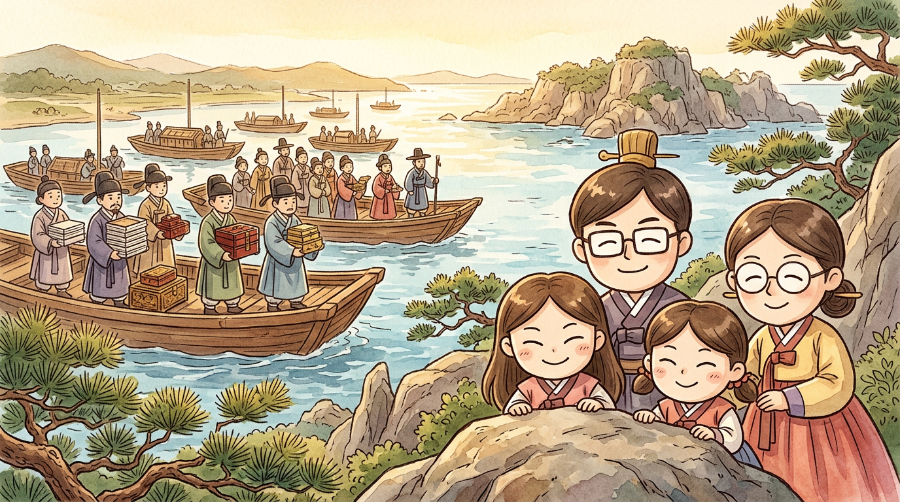
바다로 둘러싸인 강화도 - 몽골군이 건너지 못하는 천연 요새
왜 강화도였을까요? 몽골군은 말을 타고 싸우는 데 천하무적이었지만, 바다는 건너지 못했어요! 강화도는 육지에서 가까우면서도 바다로 둘러싸인 천연 요새였던 거예요. 게다가 조류(물살)가 매우 빨라서 배를 타고 건너기도 어려웠답니다.
하지만 강화도 천도에는 큰 문제가 있었어요. 지배층은 안전한 강화도에서 편하게 살았지만, 내륙의 백성들은 몽골군의 칼날 아래 고통받았어요. 이것은 무신정권이 백성보다 자기 권력을 지키는 데 더 관심이 있었다는 비판을 받는 이유랍니다.
강화도로 수도를 옮긴 것은 현명한 판단이었을까요? 지배층은 안전했지만 백성들은 고통받았어요. 지도자가 해야 할 진짜 역할은 무엇일까요?
몽골군이 무적이라고요? 고려의 용감한 백성들은 그 생각을 뒤집어 놓았어요!
1232년, 몽골 장수 살리타가 처인성(지금의 경기도 용인)을 공격했어요. 이 작은 성을 지키고 있던 것은 정규군이 아니라, 승려와 백성들이었답니다.
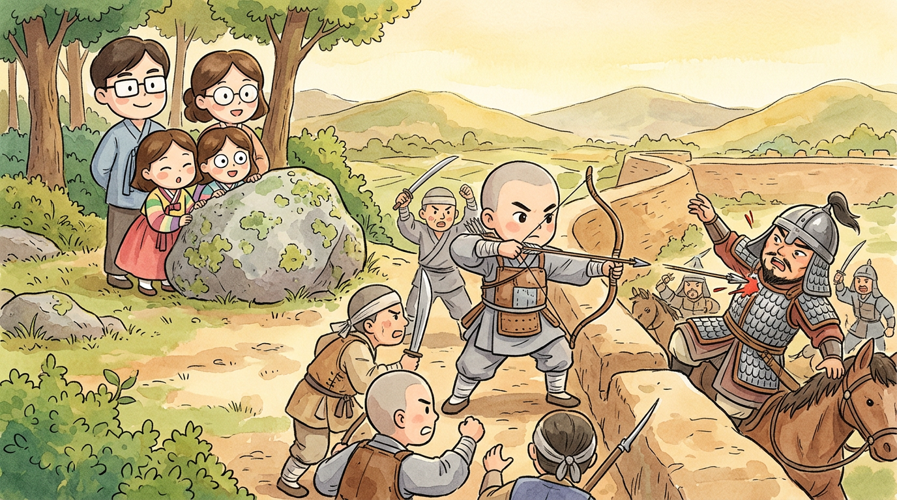
처인성에서 살리타를 화살로 쏘아 맞히는 승려 김윤후
이때 승려 김윤후가 성벽 위에서 화살을 쏘아 몽골 장수 살리타를 사살했어요! 장수를 잃은 몽골군은 혼란에 빠져 물러났답니다.
처인성 전투는 세계 최강 몽골군을 물리친 놀라운 승리였어요. 정규군이 아닌 승려와 백성이 이뤄낸 승리라는 점에서 더욱 의미가 크답니다.
김윤후는 처인성 전투뿐만 아니라, 나중에 충주성 전투에서도 몽골군을 70일 넘게 막아냈어요. 문관 직위까지 받은 전투의 영웅이랍니다! 승려이면서 동시에 나라를 지킨 전사였어요.
몽골의 침입으로 고통받던 고려 사람들은 부처님의 힘으로 나라를 지키겠다는 간절한 마음을 담아 거대한 프로젝트를 시작했어요. 바로 팔만대장경(八萬大藏經) 제작이에요.
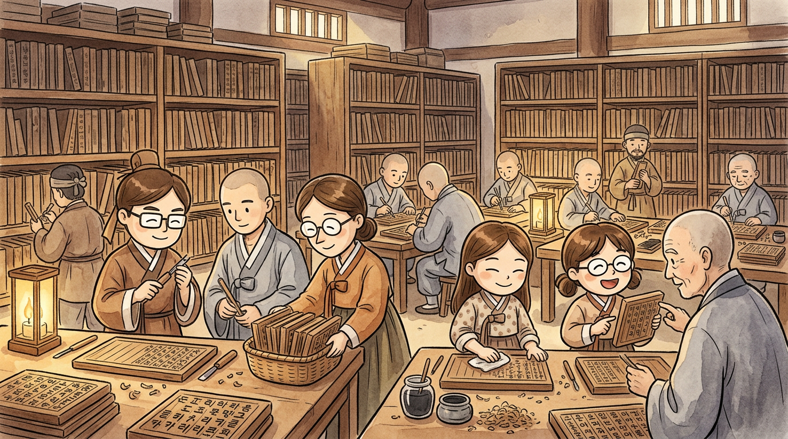
강화도에서 팔만대장경 목판을 새기는 장인들
팔만대장경은 불교 경전 전체를 나무 판에 새긴 것으로, 목판의 수가 무려 81,258장이에요! 그래서 '팔만' 대장경이라 부른답니다.
강화도에서 1236년부터 1251년까지 16년에 걸쳐 완성했어요. 놀라운 것은 이 엄청난 양의 목판에 오탈자가 거의 없다는 거예요! 한 글자 한 글자 정성을 다해 새긴 장인들의 놀라운 집중력과 정성이 담겨 있답니다.
팔만대장경은 현재 합천 해인사에 보관되어 있으며, 유네스코 세계기록유산으로 등재되어 있어요.
팔만대장경 목판은 수백 년이 지난 지금도 썩지 않고 잘 보존되어 있어요. 비결은 나무를 바닷물에 3년 담그고, 소금물에 삶고, 그늘에서 말리는 등 정교한 과정을 거쳤기 때문이에요. 또한 해인사의 장경판전은 바람의 흐름을 이용한 자연 환기 시스템으로, 습도와 온도를 자동으로 조절한답니다. 과학적으로도 놀라운 건축물이에요!
30년 가까운 항쟁 끝에, 1270년 고려 조정은 결국 몽골과 강화(평화 협정)를 맺고 개경으로 돌아가기로 했어요. 최씨 무신정권도 이미 무너진 뒤였답니다.
하지만 모든 사람이 항복에 동의한 것은 아니었어요. 삼별초(三別抄)가 끝까지 몽골에 맞서 싸우겠다고 일어선 거예요!
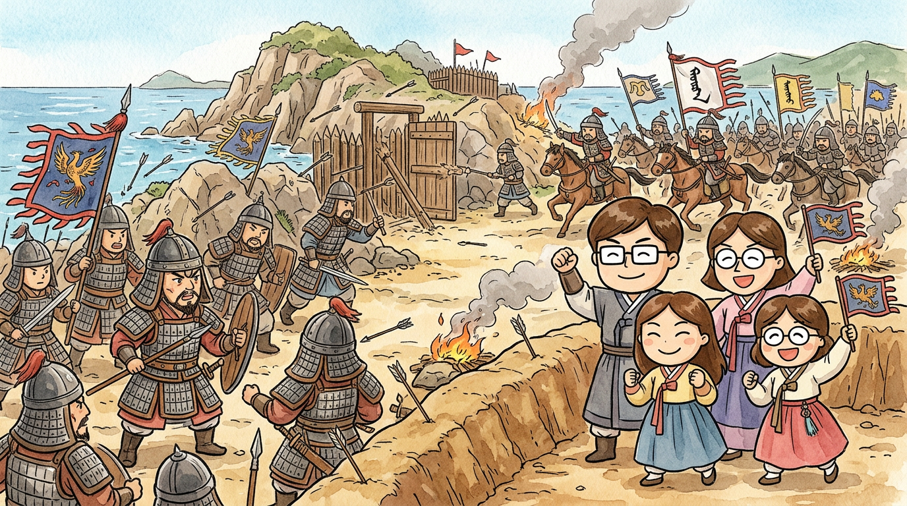
진도에서 몽골에 맞서 싸우는 삼별초
삼별초는 원래 최씨 무신정권의 사병(개인 군대)이었어요. 배중손이 이끄는 삼별초는 왕족 왕온을 왕으로 추대하고, 진도로 내려가 독자적인 정부를 세웠답니다.
삼별초는 진도에서 고려-몽골 연합군과 용감하게 싸웠지만, 결국 진도가 함락되었어요. 살아남은 삼별초는 제주도로 이동하여 항쟁을 계속했지만, 1273년 마침내 진압되었답니다.
삼별초의 항쟁은 비록 실패했지만, 세계 최강 몽골 제국에 끝까지 저항한 용기는 높이 평가받고 있어요. 삼별초의 저항은 몽골이 일본을 침략할 때 전력을 분산시키는 역할도 했답니다.
삼별초(三別抄): 좌별초, 우별초, 신의군을 합쳐 부르는 이름. 최씨 무신정권의 핵심 군사력이었어요.
강화(講和): 전쟁하던 나라들이 서로 평화를 약속하는 것.
대장경(大藏經): 불교 경전을 모두 모아 놓은 것. '장경'은 경전의 창고라는 뜻이에요.
강화도에서 지배층은 안전했지만, 내륙의 백성들은 몽골군에게 고통받았어요. 지도자가 어려운 상황에서 가장 먼저 해야 할 일은 무엇일까요?
지도자는 자기 자신보다 백성(국민)을 먼저 생각해야 해요. 강화도 천도는 군사적으로는 영리한 선택이었지만, 백성을 버리고 자기들만 안전한 곳으로 간 것은 비판받아 마땅해요. 진정한 지도자는 어려울 때 국민과 함께하고, 가장 약한 사람들을 먼저 보호하는 사람이에요. 오늘날 재난 상황에서 대통령이 현장에 가는 이유도 같은 맥락이랍니다.
팔만대장경은 전쟁 중에 16년에 걸쳐 만들어졌어요. 전쟁 중에도 문화와 예술을 지키는 것이 왜 중요할까요?
문화와 예술은 사람들에게 희망과 정신적 힘을 줘요. 팔만대장경을 만든 사람들은 부처님의 힘으로 나라를 지키겠다는 간절한 마음이 있었어요. 전쟁으로 몸은 힘들어도 마음의 힘을 잃지 않았던 거예요. 실제로 어려운 시기에 만들어진 문화재가 오히려 더 뛰어난 경우가 많아요. 고통 속에서 탄생한 예술에는 사람들의 간절한 마음이 담겨 있기 때문이에요.
삼별초는 나라가 이미 항복한 뒤에도 끝까지 싸웠어요. 이미 결정된 일에 반대하며 싸우는 것은 용감한 것일까요, 무모한 것일까요?
이것은 상황에 따라 다르게 볼 수 있어요. 삼별초의 저항은 나라의 자존심과 자유를 지키려는 용감한 행동이었어요. 하지만 결국 많은 사람이 목숨을 잃었다는 점에서 안타까운 일이기도 해요. 중요한 것은 '왜 싸우는가'예요. 정의롭고 옳은 일을 위해 싸우는 것은 용기이고, 결과가 어떻든 그 정신은 역사에 남아요. 삼별초의 용기가 오늘날 높이 평가받는 이유랍니다.
고려 하면 가장 먼저 떠오르는 것이 바로 고려청자예요! 고려청자는 맑은 하늘빛을 닮은 아름다운 도자기로, 전 세계에서 가장 아름다운 도자기 중 하나로 꼽힌답니다.
고려청자의 빛깔을 비색(翡色)이라 불러요. 비취옥처럼 맑고 신비로운 푸른빛이에요. 중국 송나라 사람 서긍이 고려를 방문하고 쓴 책 고려도경에서 "고려 도자기의 비색이 천하제일"이라고 극찬했답니다.
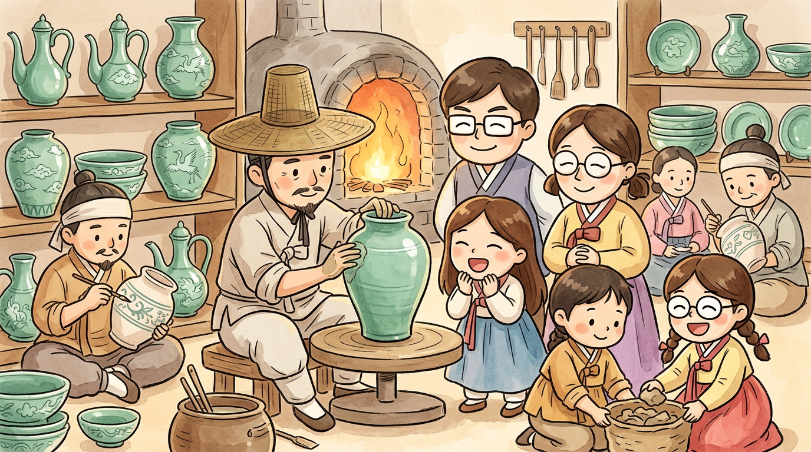
비색의 아름다움을 자랑하는 고려청자
고려청자가 처음부터 아름다웠던 것은 아니에요. 처음에는 중국 청자를 본떠 만들었지만, 점점 고려만의 독자적인 기술을 발전시켜 나갔어요. 그리고 마침내 세계 어디에도 없는 놀라운 기법을 발명했답니다!
상감청자는 고려만의 독창적인 발명품이에요. 상감기법이란, 그릇 표면에 무늬를 파낸 뒤 그 홈에 흰색이나 검은색 흙을 채워 넣고 구워내는 기술이에요.
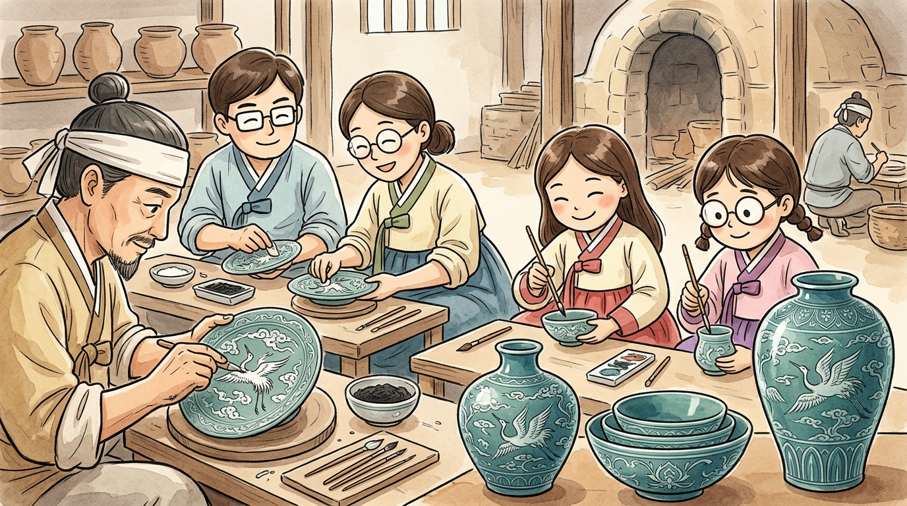
상감기법으로 학과 구름 무늬를 새긴 고려청자
가장 유명한 상감청자는 청자 상감 운학문 매병이에요. 맑은 비색 바탕 위에 하얀 학들이 구름 사이를 날아다니는 모습이 새겨져 있어요. 보는 사람마다 감탄을 금치 못하는 아름다운 작품이랍니다.
고려 장인들은 국화, 모란, 학, 버드나무, 물고기 등 자연의 아름다움을 청자에 담았어요. 하나하나 손으로 새긴 정교한 무늬는 오늘날 기계로도 따라 하기 어려울 만큼 섬세하답니다.
상감기법은 세계에서 고려만 사용한 독자적 기술이에요! 중국도, 일본도 이 기술을 따라 하지 못했답니다. 고려청자 중 가장 뛰어난 것들은 현재 국보로 지정되어 있으며, 하나의 값어치가 수십억 원에 달해요!
여러분은 "세계 최초의 금속활자"가 어디서 만들어졌는지 알고 있나요? 바로 고려예요!
흔히 독일의 구텐베르크가 금속활자를 발명했다고 알려져 있지만, 고려의 금속활자가 그보다 약 200년이나 앞선답니다!
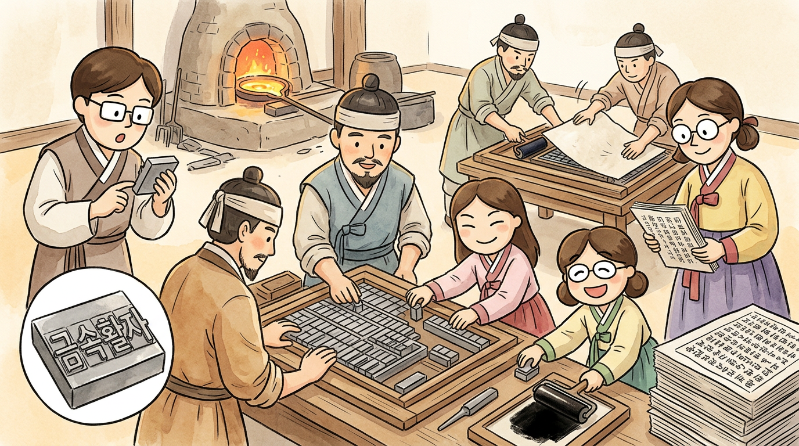
금속활자로 책을 인쇄하는 고려 장인들
고려에서 금속활자로 찍어낸 책 중 현재 남아 있는 가장 오래된 것이 직지심체요절(直指心體要節)이에요. 줄여서 직지라 부르는 이 책은 1377년에 청주의 흥덕사에서 인쇄되었어요.
직지는 불교의 가르침을 담은 책으로, 현재 프랑스 파리 국립도서관에 보관되어 있어요. 2001년에 유네스코 세계기록유산으로 등재되어 세계적으로 그 가치를 인정받았답니다.
금속활자: 금속(주로 구리)으로 만든 글자 도장. 한 글자씩 만들어 놓고 원하는 대로 조합하여 책을 찍어낼 수 있어요.
상감(象嵌): 표면을 파내고 다른 재료를 채워 넣어 무늬를 만드는 기법.
비색(翡色): 비취옥과 같은 맑고 푸른 빛깔. 고려청자의 독특한 색깔을 가리켜요.
5장에서도 이야기했지만, 팔만대장경은 고려 문화의 최고 걸작 중 하나예요. 81,258장의 목판에 새겨진 글자 수는 약 5,200만 자에 달해요!
놀라운 것은 이 엄청난 글자 중에 오타가 거의 없다는 거예요. 한 글자를 새길 때마다 절을 하고 기도했다는 전설이 있을 만큼, 장인들의 정성이 대단했답니다.
팔만대장경을 보관하는 해인사 장경판전도 놀라워요. 창문의 크기와 위치를 달리하여 자연 바람으로 온도와 습도가 자동 조절되도록 설계했어요. 750년이 넘도록 목판이 썩지 않는 비결이랍니다!
고려는 불교의 나라였어요. 왕건이 훈요십조에서 불교를 보호하라고 했을 만큼, 불교는 고려의 정신적 기둥이었답니다.
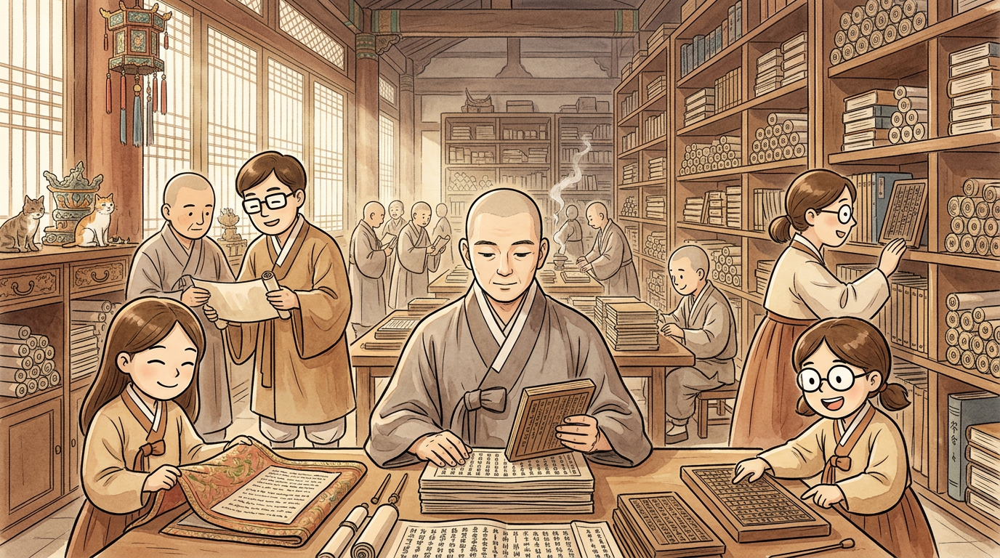
교관겸수를 주장한 의천 대사
의천(義天)은 문종의 왕자 출신 승려예요. 의천은 천태종을 창시하고, 교관겸수(敎觀兼修)를 주장했어요. 경전 공부(교)와 명상 수행(관)을 함께 해야 한다는 뜻이에요. 또한 송나라, 요나라, 일본 등에서 불교 서적을 수집하여 속장경을 만들었답니다.
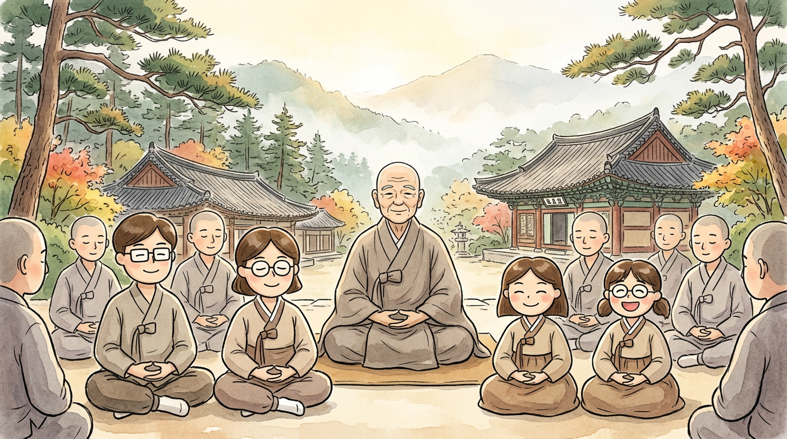
정혜쌍수를 주장한 지눌 대사
지눌(知訥)은 고려 불교를 개혁한 위대한 승려예요. 당시 불교는 너무 세속화되어 승려들이 권력과 재산에 빠져 있었어요. 지눌은 조계종을 정비하고, 정혜쌍수(定慧雙修)를 주장했어요. 마음을 고요히 하는 수행(정)과 지혜를 기르는 공부(혜)를 함께 해야 한다는 거예요.
지눌은 수선사(송광사)에서 수행하며 많은 제자를 길러냈어요. "갑자기 깨달음을 얻고, 점차 닦아나간다"는 돈오점수(頓悟漸修) 사상으로 유명하답니다.
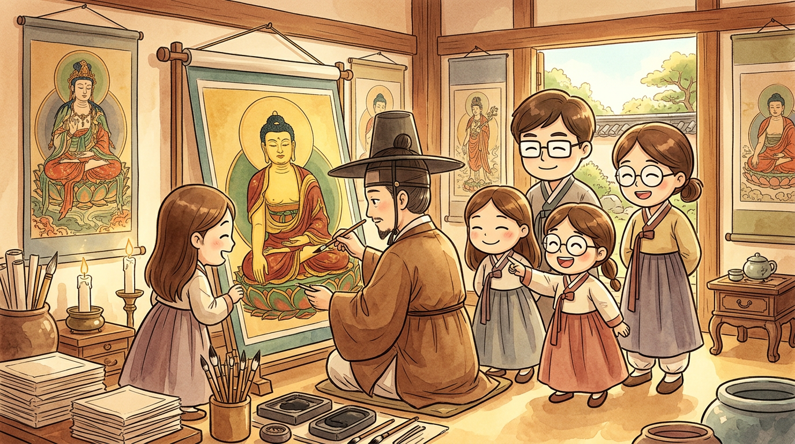
섬세하고 화려한 색채의 고려불화
고려불화는 불교 내용을 그린 그림으로, 세계 미술사에서도 최고 수준으로 평가받아요. 고려불화는 금을 사용한 화려한 색채, 투명한 천을 표현한 섬세한 기술, 자비로운 부처와 보살의 표정이 특징이에요.
현재 전 세계에 약 160여 점의 고려불화가 남아 있는데, 대부분 일본에 있어요. 우리나라에는 10여 점밖에 없답니다. 그만큼 귀하고 소중한 문화재예요.
고려의 문화 수준은 당시 세계 최고였어요! 비색 청자는 중국도 극찬했고, 금속활자는 유럽보다 200년 앞섰고, 팔만대장경은 불교 경전의 완성판이에요. 고려불화는 지금도 세계 미술 시장에서 수십억 원에 거래된답니다. 우리 조상들의 뛰어난 예술적 감각과 기술에 자부심을 느껴도 좋아요!
고려의 금속활자는 구텐베르크보다 200년이나 앞섰는데, 왜 세계적으로는 구텐베르크가 더 유명할까요?
구텐베르크의 금속활자는 유럽 전체에 빠르게 퍼져서 책이 대량으로 인쇄되었고, 이것이 종교개혁과 과학혁명의 밑거름이 되었어요. 반면 고려의 금속활자는 주로 불교 경전 등 일부 책만 찍었고, 널리 퍼지지 못했어요. 좋은 발명도 많은 사람에게 퍼져야 세상을 바꿀 수 있다는 교훈을 줘요.
팔만대장경은 전쟁 중에 16년에 걸쳐 만들었어요. 어려운 상황에서도 포기하지 않고 무언가를 완성한 경험이 있나요? 그때 무엇이 힘이 되었나요?
팔만대장경을 만든 사람들은 '부처의 힘으로 나라를 지키자'는 간절한 마음이 있었어요. 이처럼 무언가를 끝까지 해내려면 '왜 하는가'라는 목적이 분명해야 해요. 목적이 분명하면 어려움이 닥쳐도 포기하지 않게 되거든요. 여러분이 힘든 공부나 연습을 할 때도 '왜 이것을 하는가'를 떠올리면 힘이 될 거예요.
고려청자의 아름다움은 장인들이 수십 년간 연습하고 연구한 결과예요. '한 가지를 오랫동안 깊이 파는 것'과 '여러 가지를 넓게 배우는 것' 중 어떤 것이 더 좋을까요?
두 가지 모두 장점이 있어요. 고려의 도자기 장인처럼 한 분야를 깊이 파면 세계 최고가 될 수 있어요. 반면 여러 분야를 넓게 배우면 다양한 시각을 가질 수 있어요. 사실 가장 좋은 것은 둘을 합치는 거예요. 의천 대사처럼 여러 나라의 불교를 공부하면서도 불교라는 한 분야를 깊이 탐구한 것처럼요. 넓게 배우되 하나는 깊이 파는 것이 좋답니다.
여러분, 지금 우리나라의 영어 이름이 Korea인 거 알고 있죠? 이 이름이 어디에서 왔는지 알고 있나요? 바로 고려(Goryeo)에서 왔어요!
고려의 수도 개경(개성) 근처에는 벽란도(碧瀾渡)라는 국제무역항이 있었어요. 벽란도는 예성강 하구에 위치해 바다와 강이 만나는 곳으로, 큰 배들이 드나들기 좋은 천연 항구였답니다.
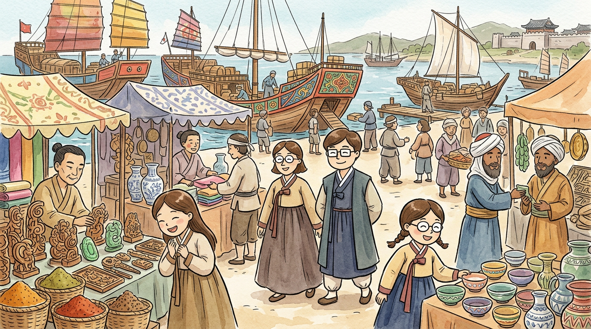
다양한 나라의 상인들이 모여드는 벽란도 항구
벽란도에는 정말 다양한 나라의 상인들이 찾아왔어요. 송나라(중국), 일본, 동남아시아 여러 나라, 그리고 멀리 아라비아(이슬람) 상인들까지! 벽란도는 동아시아의 국제 무역 중심지였답니다.
벽란도의 거리에서는 여러 나라 말이 뒤섞여 들렸고, 다양한 피부색의 사람들이 물건을 사고팔았어요. 낯선 음식 냄새, 신기한 물건들, 화려한 옷차림의 외국 상인들... 정말 신나는 곳이었을 거예요!
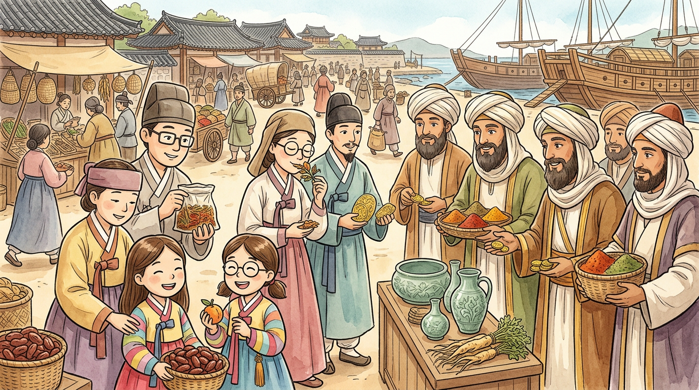
고려를 방문한 아라비아(이슬람) 상인들
아라비아 상인들은 벽란도에서 고려의 물건을 사가며, 이 나라의 이름을 들었어요. "고려(Goryeo)"라는 이름을요.
그런데 아라비아 말로는 '고려'를 정확히 발음하기 어려웠어요. 그래서 그들은 "Corea" 또는 "Korea"라고 부르기 시작했답니다.
아라비아 상인들은 자기 나라로 돌아가서 동방의 아름다운 나라 이야기를 전했어요. 이 이야기는 이슬람 세계를 거쳐 유럽까지 전해졌고, 결국 온 세계가 우리나라를 Korea라 부르게 된 거예요!
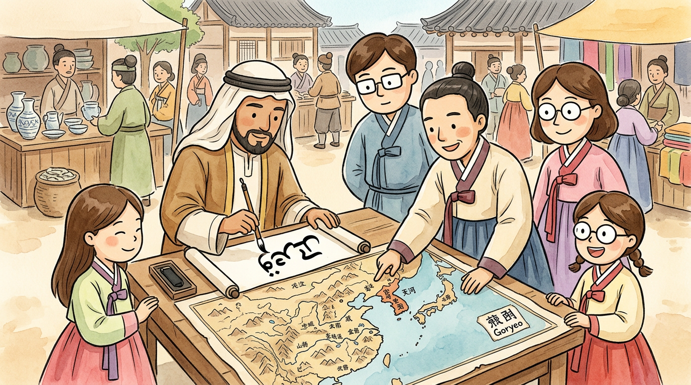
고려에서 Korea로 - 세계에 알려진 우리나라의 이름
고려가 멸망한 지 600년이 넘었지만, Korea라는 이름은 아직도 살아있어요! 우리가 올림픽에 나갈 때 가슴에 붙이는 KOREA, 외국 사람들이 우리를 부르는 Korean... 이것 모두 고려에서 온 이름이에요. 고려는 이름으로 영원히 세계 속에 살아있는 셈이랍니다.
고려는 세계에 자랑할 만한 특산물이 많았어요.
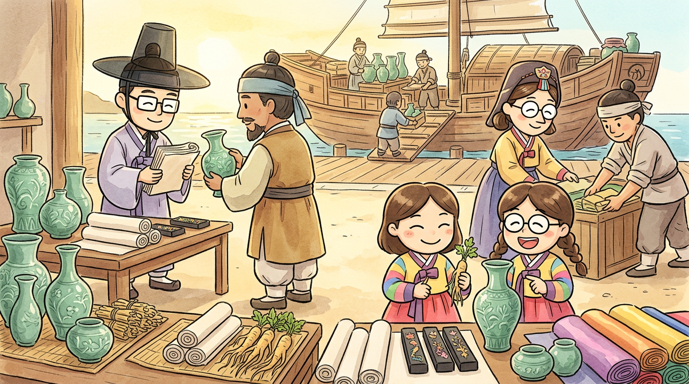
고려의 대표적인 수출품들
인삼: 고려인삼은 최고급 약재로, 중국과 아라비아에서 큰 인기였어요. 지금도 "고려인삼"이라 불리며 세계적으로 유명하답니다.
청자: 비색의 아름다운 고려청자는 송나라에서도 극찬한 명품이었어요.
종이: 고려의 종이는 질이 뛰어나서 "고려지(高麗紙)"라 불리며 인기가 좋았어요.
먹: 고려의 먹은 진하고 윤기가 나서 중국 문인들도 탐냈어요.
나전칠기: 조개껍데기를 잘게 잘라 붙여 만든 아름다운 공예품이에요. 고려의 나전칠기는 세계 최고 수준이었답니다.
고려도 다른 나라에서 많은 물건을 수입했어요.
향신료: 동남아시아와 아라비아에서 온 후추, 정향 등의 향신료. 음식의 맛을 좋게 하고, 약재로도 사용했어요.
약재: 다양한 한약 재료들이 중국과 동남아시아에서 들어왔어요.
서적: 중국의 유교 경전, 역사책, 불교 경전 등을 수입했어요. 의천이 직접 송나라에 가서 불교 서적을 가져온 것이 대표적이에요.
비단: 중국의 최고급 비단은 고려 귀족들의 필수품이었어요.
수은, 유황: 약재와 화약 제조에 사용되는 귀한 물질이었어요.
고려는 정말 열린 나라였어요. 다양한 나라와 활발하게 교류했답니다.
송나라: 가장 활발하게 교류한 나라예요. 사신이 오가고, 유학생이 공부하러 가고, 상인들이 무역을 했어요.
거란(요나라)/금나라: 전쟁도 했지만, 평화 시기에는 무역도 활발했어요.
일본: 일본 상인들이 벽란도에 자주 왔어요. 수은, 유황, 진주 등을 가져왔답니다.
동남아시아: 지금의 베트남, 태국, 인도네시아 등에서 향신료와 진귀한 물건을 가져왔어요.
아라비아(이슬람): 가장 먼 곳에서 온 상인들이에요. 향신료, 약재, 보석 등을 가져오고 인삼과 비단을 사갔답니다.
고려 시대에 아라비아 상인이 가져온 물건 중에는 공작새와 앵무새도 있었어요! 고려 사람들은 태어나서 처음 보는 화려한 새에 깜짝 놀랐답니다. 또한 아라비아 상인 중 일부는 고려에 정착하여 살기도 했어요. 지금 우리나라의 덕수 장씨 성을 가진 사람들 중에는 아라비아 상인의 후손이라는 설이 있답니다!
고려는 다른 나라와 활발하게 교류하며 발전했어요. 오늘날에도 다른 나라와의 교류가 중요한 이유는 무엇일까요?
고려는 다양한 나라와 교류하며 발전했어요. 다른 문화를 받아들이면서도 자기 고유의 문화를 지키려면 어떻게 해야 할까요?
다른 문화의 좋은 점은 배우되, 우리만의 독창성을 잃지 않는 것이 중요해요. 고려는 중국에서 도자기 기술을 배웠지만, 상감기법이라는 고려만의 독창적 기술을 발명했어요. 오늘날에도 외국 문화를 즐기면서 한글, 한식, 한복 등 우리 고유의 문화도 소중히 여기는 균형이 필요해요.
벽란도에서는 여러 나라 사람들이 서로 다른 말을 하면서도 무역을 했어요. 말이 다른 사람들이 어떻게 소통할 수 있었을까요?
당시에도 통역관이 있었고, 간단한 수화나 몸짓으로 소통하기도 했어요. 또한 무역에 필요한 기본적인 단어와 숫자는 서로 배웠을 거예요. 오늘날 영어가 세계 공용어인 것처럼, 당시에는 중국어가 동아시아의 공용어 역할을 했어요. 언어가 달라도 물건을 사고파는 것, 미소를 짓는 것은 어디서나 통하니까요!
우리나라 이름 Korea가 고려에서 온 것처럼, 나라의 이름에는 역사가 담겨 있어요. 만약 여러분이 새 나라를 만든다면 어떤 이름을 짓겠어요? 그 이유는?
나라의 이름은 그 나라가 추구하는 가치와 정신을 담아야 해요. 고려라는 이름에는 고구려의 기상을 이어받겠다는 뜻이 있었고, 조선이라는 이름에는 아침의 고요한 나라라는 뜻이 있었어요. 여러분이 나라 이름을 짓는다면, 평화, 자유, 행복 등 여러분이 가장 소중하게 생각하는 가치를 담아보세요. 이름에는 꿈이 담기니까요!
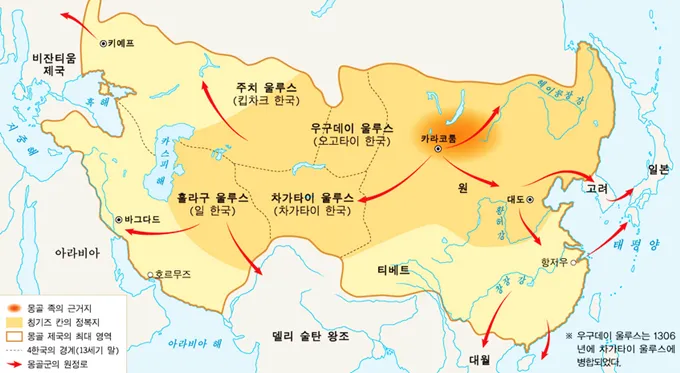
🗺 원나라의 팽창
몽골(원나라)과 강화를 맺은 뒤, 고려는 약 80년간 원 간섭기를 겪었어요. 이 시기는 고려 역사에서 가장 굴욕적인 때였답니다.
고려의 왕은 원나라 황제의 허락 없이는 왕위에 오를 수도, 내려올 수도 없었어요. 왕의 이름 앞에는 '충(忠)'자가 붙었는데, 이것은 원나라에 충성한다는 뜻이에요. 충렬왕, 충선왕, 충숙왕, 충혜왕, 충목왕, 충정왕... 무려 6명의 왕 이름에 '충'자가 들어갔답니다.
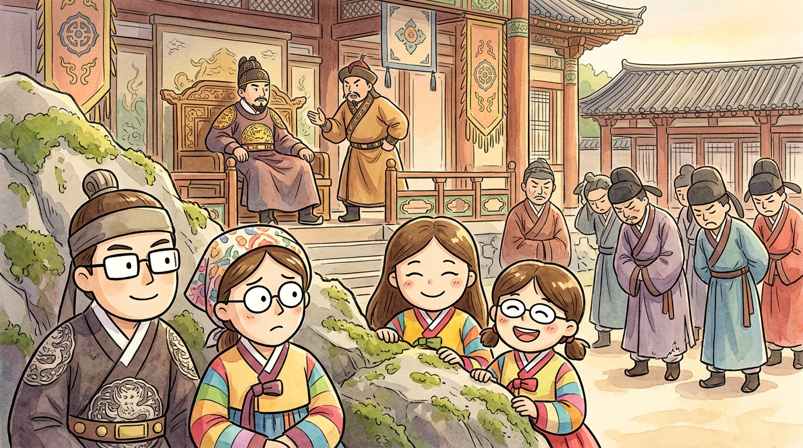
원나라의 간섭을 받는 고려 - 몽골 풍습이 퍼지다
원나라는 고려에 온갖 굴욕적인 요구를 했어요.
몽골 풍습 강요: 고려 사람들에게 몽골식 머리 모양(변발)과 몽골 옷을 입게 했어요. 고려의 전통 문화가 사라질 위기에 처한 거예요.
공녀(貢女): 고려의 젊은 여성들을 뽑아 원나라로 보내야 했어요. 이것은 고려 백성에게 가장 큰 고통 중 하나였답니다. 공녀로 뽑힐까 두려워 어린 나이에 서둘러 결혼하는 풍습까지 생겼어요.
왕실 결혼: 고려 왕은 반드시 원나라 공주와 결혼해야 했어요. 왕비가 원나라 사람이니 원나라의 간섭이 더 심해질 수밖에 없었답니다.
원 간섭기: 원(몽골)나라가 고려의 정치에 간섭하던 시기 (약 1270~1356년).
공녀(貢女): 조공(공물)으로 바치는 여성이라는 뜻. 고려에서 원나라로 보내진 젊은 여성들.
변발(辮髮): 머리를 밀고 뒤쪽만 길게 땋는 몽골식 머리 모양.
원나라의 간섭이 80년 가까이 이어지던 중, 마침내 이 굴레를 벗어던지려는 왕이 나타났어요. 바로 공민왕이에요!
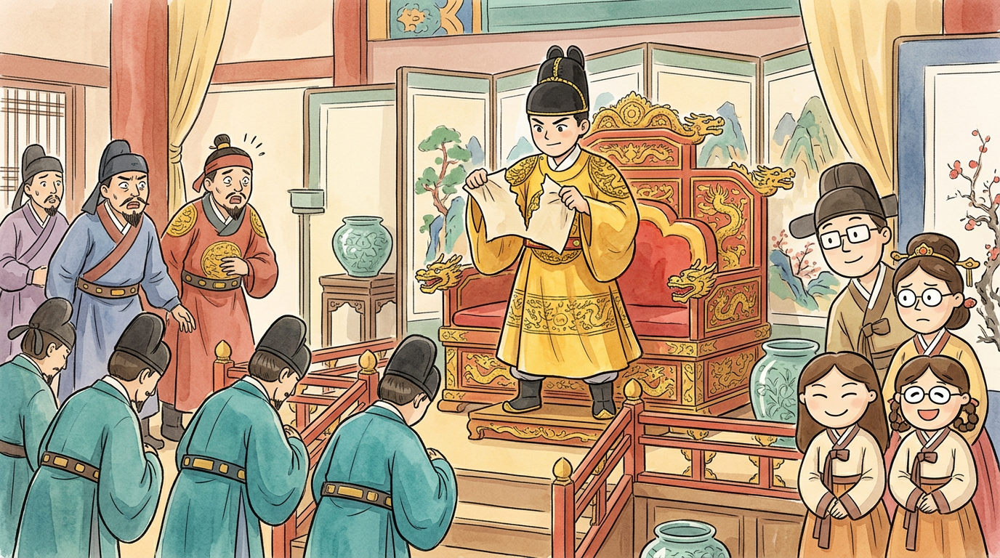
원나라의 간섭에서 벗어나 개혁을 추진하는 공민왕
공민왕이 왕위에 올랐을 때(1351년), 원나라는 안에서 반란이 일어나 힘이 크게 약해져 있었어요. 공민왕은 이 기회를 놓치지 않았답니다!
공민왕의 개혁은 대담하고 결단력 있었어요.
정동행성 폐지: 원나라가 고려를 감시하기 위해 설치한 기관을 없앴어요.
쌍성총관부 수복: 원나라에 빼앗겼던 함경도 지역을 무력으로 되찾았어요. 이때 활약한 무장이 바로 훗날 조선을 세우는 이성계예요!
몽골 풍습 금지: 변발과 몽골 옷을 금지하고, 고려 고유의 풍습을 되살렸어요.
친원파 숙청: 원나라에 빌붙어 권력을 누리던 세력을 제거했어요. 대표적 인물이 기철인데, 기철의 누이가 원나라 황후(기황후)였음에도 과감하게 처단했답니다.
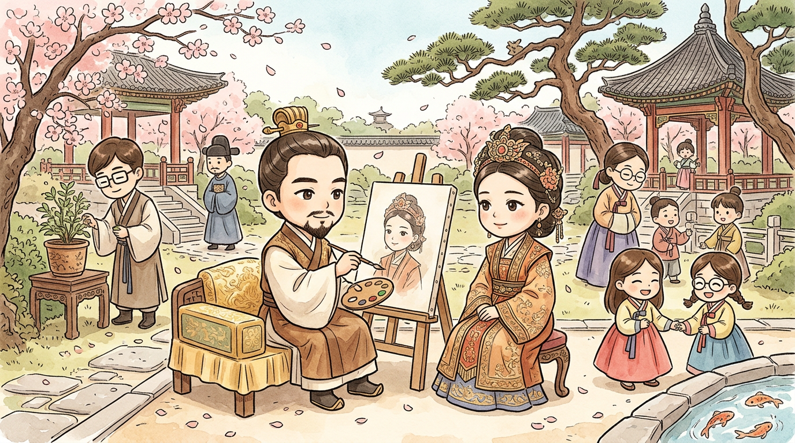
서로를 깊이 사랑한 공민왕과 노국대장공주
공민왕의 아내 노국대장공주는 원나라 공주였지만, 두 사람은 진심으로 서로를 사랑했어요. 공민왕은 직접 노국대장공주의 초상화를 그릴 만큼 뛰어난 화가이기도 했답니다.
1365년, 노국대장공주가 아이를 낳다가 세상을 떠나자, 공민왕은 큰 슬픔에 빠졌어요. 식음을 전폐하고 정사를 돌보지 않았으며, 공주를 위한 아름다운 영전(影殿)을 짓는 데 몰두했답니다.
안타깝게도 노국대장공주의 죽음 이후 공민왕의 개혁은 급격히 흔들리기 시작했어요. 유능한 왕이 사랑하는 사람을 잃고 무너지는 모습은 역사에서 가장 슬픈 이야기 중 하나랍니다.
노국대장공주를 잃은 뒤 정치에 뜻을 잃은 공민왕은 승려 신돈에게 개혁을 맡겼어요. 신돈은 전민변정도감을 설치하여 권문세족(권력 있는 귀족)이 빼앗은 백성의 땅을 돌려주고, 억울하게 노비가 된 사람을 풀어주는 개혁을 했어요.
백성들은 신돈을 "성인이 나타났다!"며 환영했어요. 하지만 땅을 빼앗긴 권문세족들은 신돈을 극도로 미워했고, 결국 신돈은 모함을 받아 처형당했답니다. 공민왕 자신도 1374년, 측근에게 시해당하는 비극적인 최후를 맞이했어요.
공민왕은 나라를 바로잡으려 했지만, 사랑하는 사람을 잃은 뒤 무너졌어요. 마음의 힘(정신력)이 일을 해내는 데 얼마나 중요한지 생각해봅시다.
고려 말기의 혼란 속에서도, 백성의 삶을 크게 바꾼 두 명의 위대한 인물이 있었어요. 바로 문익점과 최무선이에요!
고려 시대의 백성들은 삼베로 만든 옷을 입었어요. 삼베는 여름엔 시원하지만 겨울엔 너무 얇아서, 추운 겨울을 버티기가 매우 힘들었답니다.
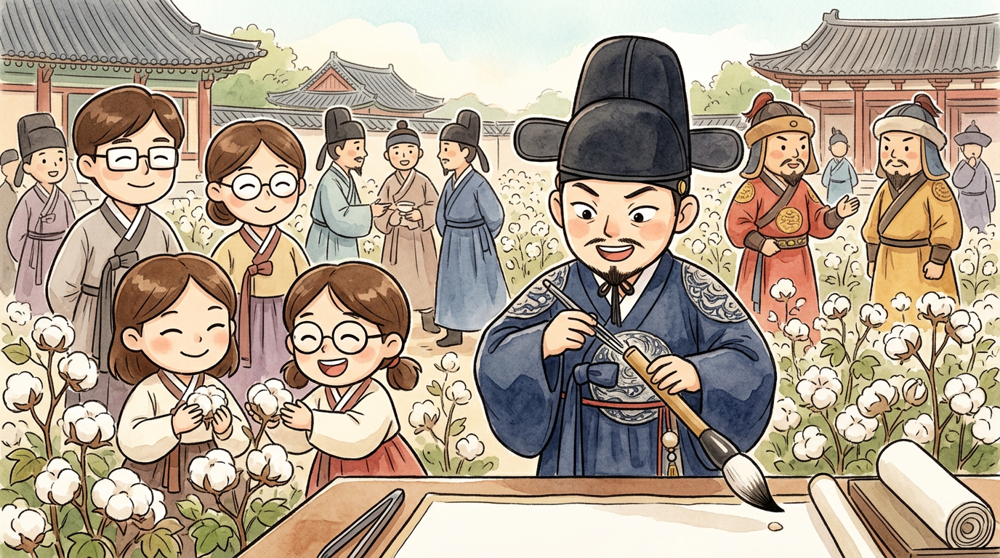
붓대 속에 목화씨를 숨겨 고려로 돌아오는 문익점
1363년, 문익점은 원나라에 사신으로 갔다가 돌아오는 길에 목화밭을 발견했어요. 목화는 솜이 되고, 솜으로는 따뜻한 면직물을 만들 수 있어요! 문익점은 목화씨를 몰래 가져오려 했지만, 원나라는 목화씨를 국외로 반출하는 것을 엄격히 금지하고 있었어요.
하지만 문익점은 포기하지 않았어요. 그는 붓대 속에 목화씨 몇 알을 숨겨서 고려로 가져왔답니다. 얼마나 용기 있는 행동인가요!
고려로 돌아온 문익점은 장인 정천익과 함께 목화 재배에 도전했어요. 처음에는 실패를 거듭했지만, 3년 만에 마침내 목화 재배에 성공했어요! 이후 목화 재배 기술이 전국으로 퍼지면서, 이전에는 삼베옷만 입던 백성들이 따뜻한 면직물(무명옷)을 입을 수 있게 되었답니다.
목화씨 도입 이전: 백성들은 얇은 삼베옷으로 추운 겨울을 버텼어요.
목화씨 도입 이후: 솜으로 속을 채운 따뜻한 겨울옷과 이불을 쓸 수 있게 되었어요!
붓대 속 목화씨 몇 알이 수백만 명의 겨울을 따뜻하게 만든 거예요.
고려 말기에는 왜구(일본 해적)가 끊임없이 해안을 약탈했어요. 왜구는 배를 타고 빠르게 이동하면서 마을을 불태우고 곡식을 빼앗았답니다. 고려의 수군은 왜구를 쫓아가기조차 힘들었어요.
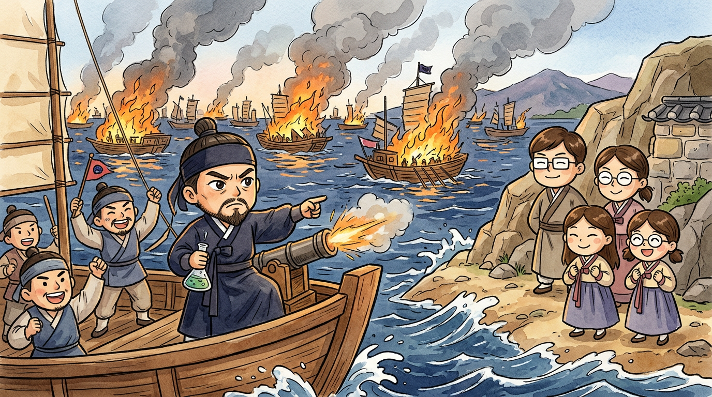
진포 해전 (1380년) - 최무선의 화포로 왜구 500여 척 격파
최무선은 화약만 있으면 왜구의 배를 불태울 수 있다는 것을 알았어요. 하지만 그 당시 고려는 화약 제조법을 몰랐답니다. 최무선은 원나라의 화약 기술자 이원을 찾아가 끈질기게 설득해 화약 제조법을 배워 왔어요.
최무선은 고려 조정을 설득하여 화통도감(火㷁都監)을 설치하게 했어요. 화통도감에서는 화약과 각종 화기(화포)를 만들었답니다.
1380년, 진포 해전이 일어났어요. 왜구 함선 500여 척이 진포(지금의 충남 서천·전북 군산 근처)에 상륙했을 때, 최무선이 이끄는 고려 함대는 화포를 이용해 왜구 함대를 모조리 불태워버렸어요! 이것은 세계 역사에서도 화약 무기를 이용한 초기 해전 중 하나로 기록될 만한 대승리였답니다.
목화(木花): 솜을 얻을 수 있는 식물. 목화씨에서 실을 뽑아 무명(면) 옷감을 만들어요.
화통도감(火㷁都監): 고려 말 화약과 화기를 제조·관리하던 관청. 최무선의 건의로 1377년 설치.
화포(火砲): 화약의 폭발력을 이용해 포탄을 쏘는 무기. 오늘날 대포의 원형.
진포 해전(鎭浦海戰): 1380년, 최무선의 화포로 왜구 500여 척을 격파한 역사적 해전.
문익점이 목화씨를 붓대 속에 숨겨 왔다는 이야기는 너무 유명해요. 하지만 일부 역사학자들은 씨앗을 가져온 방법이 달랐을 수도 있다고 해요. 어쨌든 문익점이 목화씨를 한반도에 도입했다는 사실은 분명하고, 그것이 백성들의 삶을 크게 바꾸었다는 것도 틀림없어요!
공민왕이 죽은 뒤, 고려는 더 깊은 혼란에 빠졌어요. 이때 고려를 이끈 두 명의 장군이 있었어요. 최영과 이성계예요.
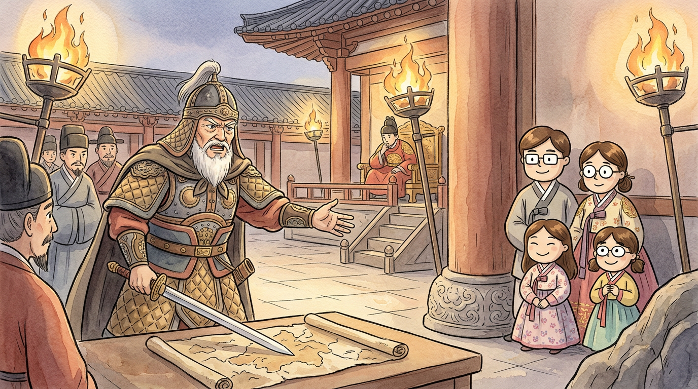
요동 정벌을 주장하는 최영 장군
최영 장군은 청렴하고 용감한 무장이었어요. "황금 보기를 돌같이 하라"는 유명한 말을 남긴 인물이에요. 최영은 원나라(이미 명나라로 교체 중)가 차지한 요동(만주) 지역을 공격하여 고려의 옛 영토를 되찾자고 주장했어요.
이성계는 함경도 출신의 뛰어난 무장으로, 여진족 토벌과 왜구 격퇴에 큰 공을 세운 인물이에요. 이성계는 요동 정벌에 반대했어요. 그의 논리는 이러했답니다.
첫째, 작은 나라가 큰 나라를 공격하는 것은 불가하다.
둘째, 여름에 군사를 동원하면 농사를 망치니 불가하다.
셋째, 온 나라 군사가 멀리 나가면 왜구가 침입할 수 있으니 불가하다.
넷째, 장마철에 활의 아교가 풀리고 병사들이 전염병에 걸리니 불가하다.
최영의 주장이 받아들여져 이성계는 어쩔 수 없이 군대를 이끌고 요동을 향해 출발했어요. 하지만 군대가 압록강의 위화도에 도착했을 때, 장마로 강물이 불어나 건너기 어려웠어요.
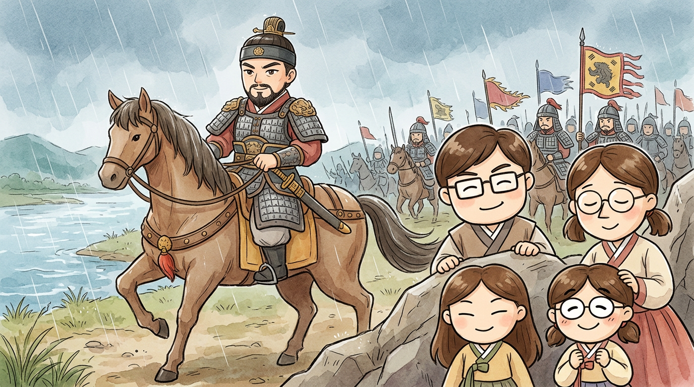
위화도에서 군대를 돌리는 이성계 - 역사의 전환점
이성계는 결심했어요. 군대를 돌려 개경으로 향한 거예요! 이것이 바로 위화도 회군이에요.
이성계의 군대는 개경을 점령하고 최영 장군을 붙잡았어요. 최영은 유배되었다가 처형되었는데, 죽을 때까지 "내 무덤에 풀이 나지 않을 것이다"라고 했다는 전설이 있어요. 실제로 최영 장군의 무덤에는 한동안 풀이 나지 않았다고 전해진답니다.
위화도 회군 이후 이성계는 고려의 실질적 권력자가 되었어요.
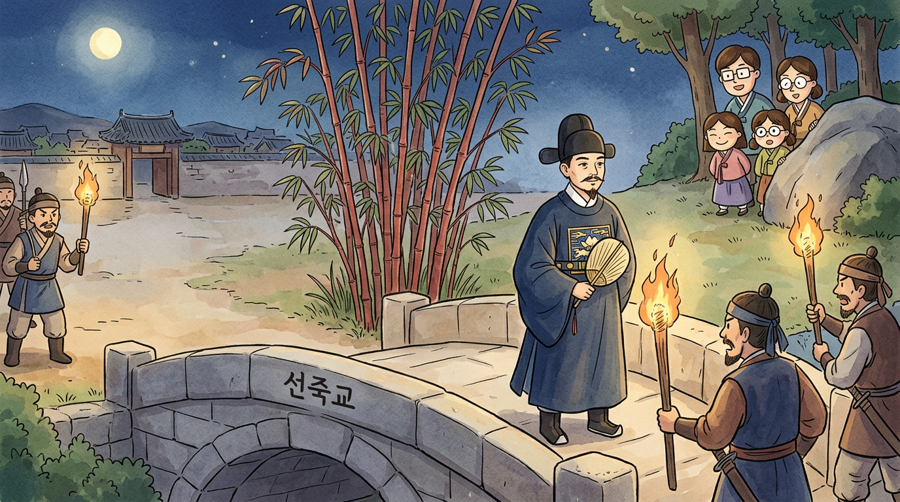
이방원의 하여가에 단심가로 답하는 정몽주
이성계가 새 나라를 세우려 하자, 고려에 끝까지 충성하는 사람들도 있었어요. 그 대표가 정몽주예요.
정몽주는 뛰어난 학자이자 외교관으로, 성리학을 깊이 연구한 인물이에요. 이성계의 아들 이방원(훗날 태종)은 정몽주를 회유하려고 유명한 시를 지어 보냈어요.
이런들 어떠하리 저런들 어떠하리
만수산 드렁칡이 얽어진들 어떠하리
우리도 이같이 얽어져 백 년까지 누리리라
"어떻게 사느냐가 중요하지, 누가 왕이든 상관없지 않느냐? 우리 함께 잘 지내자!"라는 뜻이에요.
정몽주는 이에 대해 유명한 단심가로 답했어요.
이 몸이 죽고 죽어 일백 번 고쳐 죽어
백골이 진토되어 넋이라도 있고 없고
님 향한 일편단심이야 가실 줄이 있으랴
"내 몸이 백 번 죽어 뼈가 흙이 되어도, 고려를 향한 내 충성심은 변하지 않는다!"라는 뜻이에요.
정몽주의 굳은 뜻을 확인한 이방원은 1392년, 정몽주를 선죽교에서 죽였어요. 정몽주의 피가 다리 위에 튀었는데, 비가 와도 그 핏자국이 지워지지 않았다고 해요. 그래서 이 다리를 '선죽교(善竹橋)'라 부른답니다.
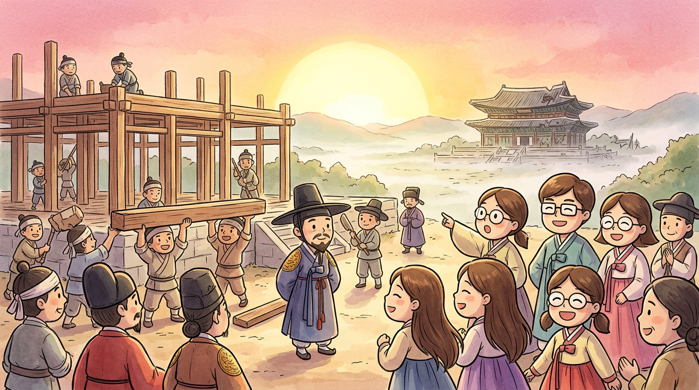
새 나라 조선의 아침 - 고려가 저물고 새 시대가 열리다
이성계 곁에는 새 나라의 설계자 정도전이 있었어요. 정도전은 성리학에 기반한 새로운 나라, 즉 유교 국가를 꿈꿨어요. 불교가 중심이었던 고려와는 완전히 다른 나라를 만들려 한 거예요.
정도전은 법과 제도로 나라를 다스려야 한다고 주장했어요. 왕이 함부로 권력을 휘두르지 못하게 하는 시스템을 만들려 했답니다. 이것은 당시로서는 매우 혁명적인 생각이었어요.
1392년, 이성계는 마침내 고려의 마지막 왕 공양왕에게 왕위를 넘겨받고 새 나라를 세웠어요. 나라 이름은 조선(朝鮮), 수도는 한양(서울)이에요.
이렇게 475년간 이어온 고려는 역사 속으로 사라지고, 새로운 나라 조선이 시작되었답니다. 하지만 고려는 사라지지 않았어요. Korea라는 이름으로, 청자와 팔만대장경의 아름다움으로, 우리 마음속에 영원히 살아있답니다.
개성의 선죽교는 지금도 남아 있어요. 다리 위에 붉은 반점이 있는데, 사람들은 이것이 정몽주의 핏자국이라고 해요. 물론 과학적으로는 돌의 자연스러운 색이지만, 정몽주의 충절을 기리는 아름다운 이야기로 전해지고 있답니다.
정몽주는 끝까지 고려에 충성했고, 정도전은 새 나라를 꿈꿨어요. 두 사람 중 누가 옳았다고 생각하나요? 그 이유는?
이것은 정답이 없는 질문이에요. 정몽주의 입장에서는 자기 나라에 대한 충성이 가장 중요한 가치였어요. 변하지 않는 신념은 존경받아 마땅해요. 정도전의 입장에서는 부패한 고려를 고치는 것보다 새 나라를 세우는 것이 백성에게 더 좋다고 생각했어요. 두 사람 모두 자기가 옳다고 믿는 길을 걸었고, 그 신념 때문에 역사에 이름을 남겼답니다.
공민왕은 원나라의 간섭에서 벗어나려 용감하게 싸웠지만, 사랑하는 사람을 잃은 뒤 무너졌어요. 어려운 일이 생겼을 때 마음을 다잡는 방법은 무엇일까요?
슬프고 힘들 때는 혼자 견디지 않고 주변 사람에게 이야기하는 것이 중요해요. 공민왕에게도 마음을 나눌 수 있는 진정한 친구가 있었다면 달랐을 거예요. 또한 자기가 해야 할 일(사명)을 떠올리면 힘을 낼 수 있어요. 슬픔은 자연스러운 감정이지만, 그 슬픔에 빠져 중요한 일을 놓치면 더 큰 불행이 올 수 있답니다.
고려는 475년이라는 긴 세월 동안 존재했어요. 한 나라가 오래 유지되려면 무엇이 가장 중요할까요? 고려가 멸망한 이유에서 교훈을 찾아보세요.
나라가 오래 유지되려면 백성의 삶을 잘 돌보고, 시대에 맞게 변화해야 해요. 고려가 멸망한 이유는 여러 가지예요. 권문세족의 부패, 원나라 간섭으로 인한 국력 약화, 새로운 시대를 이끌 개혁의 실패 등이에요. 반면 고려가 475년이나 유지된 비결은 개방적 교류, 뛰어난 문화, 외침에 맞선 국민의 단결이었어요. 어떤 조직이든 변화에 적응하고 구성원을 돌보는 것이 오래가는 비결이랍니다.
| 문화유산 | 시기 | 특징 | 현재 상태 |
|---|---|---|---|
| 고려청자 (상감청자) | 11~13세기 | 비색, 상감기법 (세계 유일) | 국보 다수, 박물관 소장 |
| 팔만대장경 | 1236~1251 | 81,258장 목판, 오탈자 거의 없음 | 해인사 보관, 유네스코 세계기록유산 |
| 직지심체요절 | 1377 | 세계 최초 금속활자 인쇄물 | 프랑스 국립도서관, 유네스코 세계기록유산 |
| 고려불화 | 12~14세기 | 금 사용, 섬세한 표현, 세계적 수준 | 약 160점 현존 (대부분 일본 소장) |
| 나전칠기 | 고려 전시기 | 조개껍데기 상감, 세계 최고 수준 | 소수 현존, 국보급 문화재 |
| 시기 | 연도 | 핵심 사건 | 특징 |
|---|---|---|---|
| 건국과 통일 | 918~936 | 고려 건국, 후삼국 통일 | 왕건의 포용 정책, 호족 통합 |
| 체제 정비기 | 949~997 | 광종 개혁, 성종 제도 정비 | 왕권 강화, 유교 정치 확립 |
| 대외 항쟁기 | 993~1019 | 거란 3차 침입 격퇴 | 서희 외교, 강감찬 귀주대첩 |
| 문벌귀족 시대 | 1019~1170 | 이자겸의 난, 묘청의 난 | 문벌귀족 횡포, 문화 융성 |
| 무신정권 | 1170~1270 | 무신정변, 최씨 정권 | 무관 집권, 신분 질서 동요 |
| 대몽 항쟁기 | 1231~1270 | 강화도 천도, 삼별초 항쟁 | 팔만대장경 제작, 민중 항쟁 |
| 원 간섭기 | 1270~1356 | 몽골 풍습 강요, 공녀 | 자주성 상실, 문화 수난 |
| 개혁과 멸망 | 1351~1392 | 공민왕 개혁, 위화도 회군 | 반원자주, 신진사대부 성장 |
| 인물 | 분야 | 대표 업적 | 명언/일화 |
|---|---|---|---|
| 왕건 | 정치 | 고려 건국, 후삼국 통일 | 훈요십조, 포용의 리더십 |
| 서희 | 외교 | 강동 6주 획득 | 말 한마디로 전쟁을 이긴 외교관 |
| 강감찬 | 군사 | 귀주대첩 | 태어날 때 별이 떨어졌다는 전설 |
| 광종 | 정치/개혁 | 노비안검법, 과거제 | 7년을 참고 기다린 개혁 군주 |
| 최충헌 | 정치/군사 | 최씨 무신정권 (4대 60년) | 왕을 갈아치운 실권자 |
| 김윤후 | 군사 | 처인성 전투 승리 | 승려 출신 전쟁 영웅 |
| 공민왕 | 정치/예술 | 반원자주 개혁 | 노국대장공주와의 사랑 |
| 정몽주 | 학문/충절 | 고려에 대한 충절 | 단심가, 선죽교 |
| 정도전 | 정치/사상 | 조선 건국 설계 | 유교 국가의 설계자 |